🎯 Precision Modeling Techniques
Master the art of exact modeling with professional tools and workflows that separate amateur work from studio-quality results.
You've learned the fundamentals of modeling—creating shapes, editing vertices, and using modifiers. But there's a crucial difference between creating geometry and creating precise geometry. Imagine building furniture without a tape measure, level, or square. Sure, you might end up with something chair-shaped, but will the legs all be the same length? Will the seat be level? Will multiple chairs match each other?
Professional 3D modeling requires the same precision as carpentry, engineering, or architecture. Whether you're creating modular game assets that must snap together perfectly, architectural visualizations with real-world dimensions, or hard-surface models with clean, symmetrical forms, precision tools are essential. The difference between amateur and professional work often comes down to accurate measurements and perfect alignment.
In this lesson, you'll master Blender's precision modeling toolkit—the snapping system, numerical input, measurement tools, and professional workflows that ensure every vertex, edge, and face is exactly where it needs to be. These aren't optional advanced features; they're fundamental skills that will save you countless hours of frustration and elevate the quality of everything you create.
🎓 What You'll Learn
- Snapping Tools: Align objects perfectly to grids, vertices, and surfaces
- Exact Transformations: Use numerical input for pixel-perfect positioning
- Measurement Tools: Measure distances and angles accurately
- Grid & Unit Systems: Work with real-world dimensions
- Symmetry Workflows: Create perfectly mirrored geometry
- Professional Techniques: Industry-standard precision modeling methods
⏱️ Estimated Time: 90-120 minutes
🎯 Project: Model a precise mechanical part using professional techniques
In This Lesson
Why Precision Matters in 3D Modeling
Imagine you're building a house. You could eyeball the measurements, cut boards "close enough," and hope everything fits together. Or you could use a tape measure, level, and square to ensure every piece is exactly where it needs to be. The difference? One approach leads to crooked walls and doors that don't close, while the other creates a solid, professional structure.
The same principle applies to 3D modeling. While organic shapes like characters or creatures can have some flexibility, many projects require exact precision:
🏗️ When Precision is Critical
| Project Type | Why Precision Matters | Tolerance Level |
|---|---|---|
| Architectural Visualization | Must match real-world dimensions exactly | ± 1mm or less |
| Product Design | Parts must fit together perfectly | ± 0.1mm |
| Hard Surface Models | Clean edges and symmetry create professional look | ± 0.01 units |
| Game Assets | Modular pieces must align perfectly | ± 0.001 units |
| 3D Printing | Physical tolerances for assembly | ± 0.2mm |
💡 The Professional Difference: Amateur modelers eyeball placements and hope for the best. Professional modelers use precise tools to ensure accuracy from the start. This saves countless hours of fixing alignment issues later and produces cleaner, more reliable results.
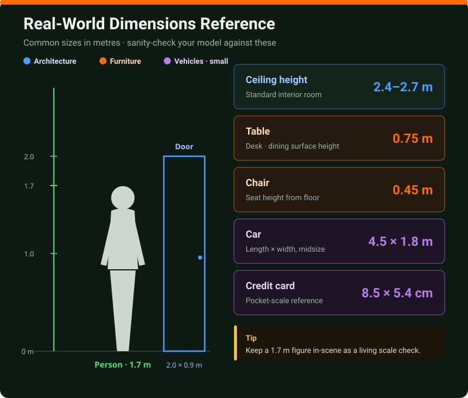
The Cost of Imprecision
Let me share a real-world example from my early days. I was modeling a sci-fi corridor for a game, creating modular pieces that were supposed to snap together. I eyeballed the dimensions, thinking "that looks about right." Three days later, when assembling the level, nothing aligned properly. Gaps everywhere, walls overlapping, doors floating off their frames.
What should have taken a few hours to assemble took three additional days to fix. The lesson? Measure twice, model once.
⚠️ Common Problems from Lack of Precision
- Z-Fighting: Overlapping faces flicker because they're too close (but not snapped)
- Light Leaks: Tiny gaps between objects let light through in renders
- Modifier Failures: Boolean operations fail when objects aren't properly aligned
- UV Distortion: Irregular geometry creates stretched textures
- Animation Issues: Slight misalignments become obvious during movement
- Assembly Problems: Modular pieces don't fit together smoothly
The Precision Mindset
Precision modeling isn't about being obsessive or perfectionist—it's about working smarter, not harder. When you use the right tools from the start, you:
- ✅ Spend less time fixing alignment issues
- ✅ Create cleaner topology that's easier to modify
- ✅ Produce models that work reliably with modifiers
- ✅ Build modular assets that snap together perfectly
- ✅ Deliver professional results that clients trust
✅ The Precision Workflow Philosophy
Think like an engineer, create like an artist. Precision tools handle the technical accuracy while you focus on the creative aspects. It's like having a calculator nearby while doing math—you still need to understand the concepts, but the tool ensures accuracy.
In this lesson, we'll explore Blender's powerful precision tools that professionals use daily. You'll learn when to use each tool, how to combine them effectively, and develop workflows that make precision second nature. By the end, you'll be modeling with the confidence and accuracy of a seasoned professional.
🧲 Understanding Blender's Snapping System
Think of snapping like magnetic docking points in the real world. When you park your laptop on a charging dock, magnets pull it into exactly the right position—no fiddling required. Blender's snapping system works the same way: it "pulls" your cursor or selection to specific points, ensuring perfect alignment automatically.
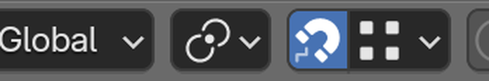
The Snapping Control Center
Blender's snapping controls live in the 3D Viewport header, just above your scene. Let's break down each control and what it does:
🎮 Snapping Control Reference
| Control | Icon/Location | Function | Shortcut |
|---|---|---|---|
| Snap Toggle | Magnet icon | Turn snapping on/off globally | Shift + Tab |
| Snap To | Dropdown menu | Choose what to snap to (grid, vertex, etc.) | Shift + S (menu) |
| Snap With | Second dropdown | Choose what part snaps (center, active, etc.) | — |
| Project Individual | Target icon | Project elements individually vs. as group | — |
| Align Rotation | Rotation icon | Match rotation to snap target | — |
How Snapping Actually Works
When you move, rotate, or scale something with snapping enabled, Blender constantly calculates the distance between your cursor and potential snap points. When you get close enough (within the "snap radius"), the object magnetically locks to that point.
Here's the key insight: Snapping is context-aware. The available snap targets change based on:
- 🎯 Current mode: Object Mode vs. Edit Mode have different options
- 🎯 Active tool: Different tools offer different snap behaviors
- 🎯 Selection: What you have selected affects what can snap
- 🎯 Viewport angle: Your view direction affects projection snapping
💡 Pro Insight: Think of snapping like different types of magnets. A compass needle snaps to magnetic north (like grid snapping). A refrigerator magnet snaps to the metal surface (like face snapping). Each type serves a specific purpose.
The Five Snap Target Types
Blender offers five main snap targets, each designed for specific modeling scenarios:

1️⃣ Increment (Grid)
What it does: Snaps to grid subdivisions at regular intervals
Best for: Laying out scenes, creating modular assets, architectural modeling
Think of it as: Graph paper that keeps everything aligned
2️⃣ Vertex
What it does: Snaps to the exact position of vertices (corner points)
Best for: Connecting meshes, merging geometry, precise point-to-point alignment
Think of it as: Click-together building blocks
3️⃣ Edge
What it does: Snaps to any point along an edge (creates new connection)
Best for: Subdividing geometry, creating edge loops, intersecting paths
Think of it as: Snapping to a ruler anywhere along its length
4️⃣ Face
What it does: Snaps to the surface of faces, following the contour
Best for: Placing objects on surfaces, creating surface details, draping geometry
Think of it as: Sticky notes that conform to any surface
5️⃣ Volume
What it does: Snaps to the center of volume/mass of objects
Best for: Centering objects, finding balance points, quick alignment
Think of it as: Finding the center of gravity
🎯 Choosing the Right Snap Type
Ask yourself these questions:
- What needs to align? Points → Vertex | Lines → Edge | Surfaces → Face | Spacing → Grid
- How precise? Exact points → Vertex/Edge | General placement → Face/Grid
- Is the target curved? Yes → Face (follows contour) | No → Vertex/Edge
- Building modular assets? Always use Grid for consistent spacing
Snapping in Action: Your First Test
Let's put snapping to work with a practical example that demonstrates the power of each snap type:
📝 Testing Grid Snapping
- Start fresh: Delete the default cube (
X→ Delete) - Add a new cube:
Shift+A→ Mesh → Cube - Enable snapping: Press
Shift+Tab(or click the magnet icon in the header) - Set snap type to Increment: Click the dropdown next to the magnet, choose "Increment"
- Move the cube: Press
Gand move your mouse - Notice: The cube "jumps" from one grid line to another instead of moving smoothly
- Try moving along an axis:
G,X— it snaps to grid lines along the X-axis
That magnetic pull you feel? That's snapping in action. The cube wants to stay aligned with the grid, making it impossible to place it "between" grid lines unless you disable snapping.
📝 Testing Vertex Snapping
- Add another cube:
Shift+A→ Mesh → Cube - Move it away:
G,X,3,Enter - Change snap type to Vertex: Click dropdown → "Vertex"
- Select the first cube
- Enter Edit Mode:
Tab - Select one vertex: Click a corner point
- Move it toward the other cube:
G - Get close to a vertex on the other cube: Watch it snap perfectly to that point!
🎯 The Snap Radius: Snapping doesn't happen from a distance—you need to get close enough to trigger it. The "snap radius" is an invisible sphere around snap points. When your cursor enters this sphere, snapping activates. If snapping seems weak, get closer to your target!
Advanced Snapping Options
Beyond the basic snap targets, Blender offers several refinement options that give you surgical control:
🎛️ Advanced Snap Controls
| Option | What It Does | When to Use |
|---|---|---|
| Snap With: Closest | Snaps using the closest point of your selection | Default — works for most situations |
| Snap With: Center | Snaps using the center/origin point | When aligning object centers |
| Snap With: Median | Snaps using the median point of selection | When moving multiple vertices |
| Snap With: Active | Snaps using only the active element | Precise control with multi-selection |
| Align Rotation to Target | Rotates object to match snap target's orientation | Placing objects on angled surfaces |
| Project Individual Elements | Each selected element snaps independently | Draping vertices onto surfaces |
The Snap Menu (Shift+S)
In addition to transform snapping, Blender has a dedicated snap menu with powerful preset operations:
📝 Using the Snap Menu
- Press
Shift+Sanywhere in the viewport - A pie menu appears with various snap operations
- These are instant snaps — they move things immediately, no dragging needed
🎯 Essential Snap Menu Options
| Option | What It Does | Common Use |
|---|---|---|
| Selection to Cursor | Moves selection to 3D cursor location | Positioning objects at specific points |
| Cursor to Selected | Moves 3D cursor to selection center | Setting pivot points, rotation centers |
| Cursor to World Origin | Moves cursor to (0, 0, 0) | Resetting cursor, centering operations |
| Selection to Grid | Snaps selection to nearest grid point | Cleaning up slightly offset geometry |
| Selection to Active | Moves all selected to active element | Aligning multiple objects quickly |
| Cursor to Grid | Snaps cursor to nearest grid intersection | Precise cursor placement |
💡 Pro Workflow: The Shift+S menu is one of the most-used shortcuts in professional Blender modeling. Memorize these operations: Selection to Cursor, Cursor to Selected, and Cursor to World Origin. You'll use them constantly!
Practical Snapping Scenarios
Let's look at real-world situations where different snap types shine:
✅ Scenario 1: Building Modular Game Assets
Goal: Create wall pieces that snap together perfectly
Snapping strategy:
- Use Grid (Increment) snapping for all modeling
- Set grid size to match your asset size (e.g., 2-unit grid for 2-unit walls)
- Every vertex automatically aligns to grid
- All pieces snap together perfectly in game engines
Result: Zero gaps, perfect alignment, modular assembly
✅ Scenario 2: Connecting Two Mesh Objects
Goal: Bridge geometry between two separate objects
Snapping strategy:
- Use Vertex snapping
- Select vertices on edge of first mesh
- Move them to vertices on second mesh
- Enable Merge to automatically merge overlapping vertices
Result: Seamless connection with no gaps or overlaps
✅ Scenario 3: Placing Props on Terrain
Goal: Position trees, rocks, buildings on uneven ground
Snapping strategy:
- Use Face snapping
- Enable Align Rotation to Target
- Move objects toward terrain surface
- They automatically sit flat on the terrain, matching its angle
Result: Props naturally conform to terrain, no floating or sinking
✅ Scenario 4: Creating Edge Subdivisions
Goal: Add a vertex at exact midpoint of an edge
Snapping strategy:
- Use Edge snapping
- Extrude from a vertex or create new geometry
- Snap to target edge — automatically places at exact midpoint
Result: Perfect edge subdivisions without manual calculation
📐 Grid Snapping and Alignment
Grid snapping is the foundation of precision modeling. Think of it as working on graph paper—every point falls on a precise intersection, ensuring consistent spacing and perfect alignment. This is especially critical for architectural models, game assets, and anything that needs modular assembly.
Understanding the Grid
Blender's 3D viewport has an invisible grid that extends infinitely in all directions. By default, you can see the grid floor, but the grid exists throughout 3D space:
📊 Grid Structure
- Major grid lines: Dark lines that appear every 10 units
- Minor grid lines: Lighter lines between major lines (every 1 unit by default)
- Subdivision: The grid can be subdivided further (0.1, 0.01 units, etc.)
- 3D grid: Exists in all three dimensions, not just the floor
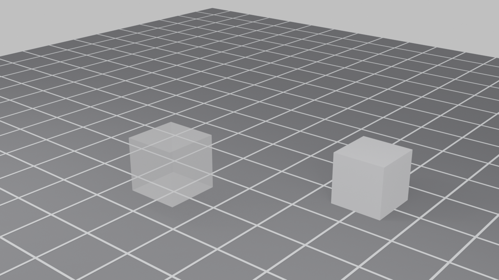
Adjusting Grid Scale
The default grid might not match your project's needs. Here's how to adjust it:
📝 Changing Grid Scale
- Open the Overlay menu: Top right of viewport, click the icon with two overlapping circles
- Look for "Scale" under the Grid section
- Adjust the value:
- Scale = 1.0 → Grid lines every 1 unit (default)
- Scale = 0.1 → Grid lines every 0.1 units (finer detail)
- Scale = 10.0 → Grid lines every 10 units (larger scale)
- Subdivision: Increase subdivision to see more lines between major gridlines
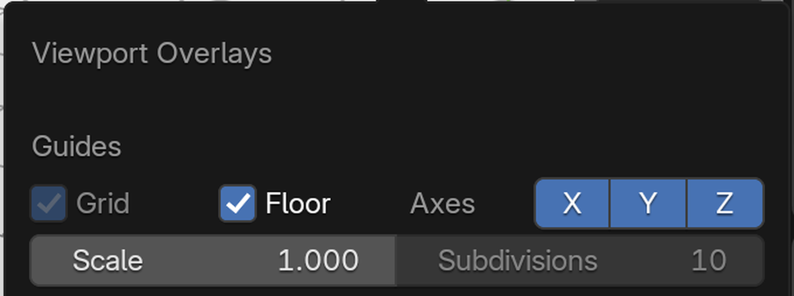
🎯 Grid Scale Best Practices: Match your grid scale to your project. Modeling a house? Use 1-unit grid (1 meter). Creating small mechanical parts? Use 0.1 or 0.01 grid. Building a city? Use 10-unit grid. The right scale prevents excessive snapping and makes modeling flow naturally.
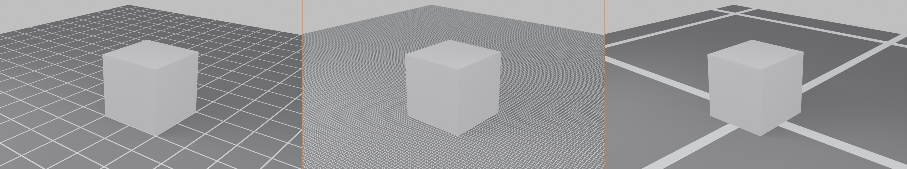
Grid Snapping Workflow
Here's how to use grid snapping effectively in your daily modeling:
📝 Professional Grid Snapping Workflow
- Set your grid scale first: Before modeling, match grid to project scale
- Enable Increment snapping:
Shift+Tab→ Set to "Increment" - Model with snapping active: All movements snap to grid automatically
- Disable when needed: Toggle
Shift+Tabfor organic work - Clean up geometry: Use
Shift+S→ "Selection to Grid" to snap vertices
Creating Modular Assets
Grid snapping shines when creating modular pieces. Let's build a simple modular wall system:
📝 Exercise: Modular Wall Section
- Set grid scale to 2.0: Overlay menu → Grid Scale = 2.0
- Enable Increment snapping:
Shift+Tab, ensure "Increment" is selected - Add a cube:
Shift+A→ Mesh → Cube - Scale to wall dimensions:
S,X,2,Enter(4 units wide)S,Z,1.5,Enter(3 units tall)S,Y,0.1,Enter(0.2 units thick)
- Move it:
G→ Notice it snaps to 2-unit intervals - Duplicate:
Shift+D,X→ Snaps perfectly next to original - Result: Wall sections that fit together with zero gaps!
💡 The Grid Spacing Rule
For modular assets, follow this formula:
Grid Scale = Asset Base Size
Examples:
- 2-unit walls → 2.0 grid scale
- 4-unit floor tiles → 4.0 grid scale
- 0.5-unit LEGO studs → 0.5 grid scale
This ensures every duplication automatically aligns perfectly!

Absolute vs. Relative Grid Snapping
Grid snapping has two modes that behave differently:
🎛️ Snapping Modes
| Mode | Behavior | Best For |
|---|---|---|
| Absolute (Default) | Snaps to grid lines at fixed world positions | Placing objects at exact grid intersections |
| Relative | Snaps in increments relative to starting position | Moving objects by exact distances |
By default, you're in Absolute mode. This means objects snap to the world grid. But sometimes you want to move something by an exact amount, regardless of where it started. That's when you'd use Relative mode (though Blender doesn't expose this as a toggle—instead, you achieve it through numerical input, which we'll cover later).
Grid Snapping in Edit Mode
Grid snapping becomes even more powerful in Edit Mode, where you can snap individual vertices, edges, and faces:
📝 Vertex Grid Snapping
- Select an object and enter Edit Mode:
Tab - Enable Increment snapping
- Select a vertex
- Move it:
G - Watch it snap to grid points in 3D space!
This is incredibly useful for cleaning up geometry. If you have vertices that are "almost" aligned, select them all and move them slightly—they'll snap to the nearest grid point, creating perfect alignment.
Common Grid Snapping Pitfalls
⚠️ Grid Snapping Troubleshooting
Problem: Object snaps to weird positions
- Cause: Object origin isn't at a grid point
- Solution: Snap cursor to grid (
Shift+S→ Cursor to Grid), then set origin to cursor
Problem: Snapping increments too large/small
- Cause: Grid scale doesn't match your work
- Solution: Adjust grid scale in Overlay menu
Problem: Can't snap between grid lines
- Cause: That's how grid snapping works—it's intentional!
- Solution: Either decrease grid scale or disable snapping temporarily
Problem: Snapping doesn't work at all
- Cause: Snapping is disabled or wrong type selected
- Solution: Press
Shift+Taband verify "Increment" is chosen
Advanced Grid Techniques
✅ Pro Grid Snapping Tips
- Temporary disable: Hold
Ctrlwhile moving to temporarily disable snapping - Change snap type mid-transform: Start moving, then press
Shift+Tabto toggle - Combine with axis locking:
G,Xsnaps along X-axis only - Use with Array modifier: Set array offset to match grid spacing for perfect duplication
- Clean up imported models: Select all vertices, use "Selection to Grid" to fix slight misalignments
🎯 Vertex and Element Snapping
While grid snapping is perfect for regular layouts, vertex snapping is your precision tool for connecting geometry directly. Imagine trying to connect two puzzle pieces—you need their edges to meet exactly, not "close enough." Vertex snapping makes this effortless by magnetically locking points together.
Why Vertex Snapping Matters
In professional modeling, you often need to connect separate mesh pieces, merge objects, or align geometry point-to-point. Manual alignment is frustrating and error-prone. Vertex snapping solves this instantly:
🎨 Perfect Use Cases for Vertex Snapping
- Joining meshes: Connect separate objects into one continuous piece
- Creating bridges: Connect edges between distant geometry
- Aligning duplicates: Stack or arrange copies with perfect precision
- Retopology: Create new geometry that follows existing shapes exactly
- Symmetry work: Mirror operations without the Mirror modifier
- Detail work: Add fine details that connect to specific points
Basic Vertex Snapping Workflow
Let's connect two cubes using vertex snapping:
📝 Connecting Two Objects
- Create two cubes:
- Add first cube:
Shift+A→ Mesh → Cube - Add second cube:
Shift+A→ Mesh → Cube - Move second cube away:
G,X,3,Enter
- Add first cube:
- Enable vertex snapping:
- Press
Shift+Tabto enable snapping - Click dropdown, select "Vertex"
- Press
- Enter Edit Mode on first cube: Select it, press
Tab - Select a vertex on the right side
- Move it toward second cube:
G - Get close to a vertex on the second cube: It snaps perfectly!
- Confirm: Click or press
Enter
💡 The Snap Dance: Vertex snapping requires a bit of finesse. Move slowly as you approach the target vertex—when you get within the snap radius, you'll feel the "pull" as your vertex locks on. If it doesn't snap, you're too far away. Move closer until you feel that magnetic attraction!

Edge Snapping: The Middle Ground
Edge snapping is like vertex snapping's more flexible cousin. Instead of snapping to exact vertices, it snaps to any point along an edge. This is incredibly useful for subdividing geometry or creating intersections:
📝 Using Edge Snapping
- Start with a cube in Edit Mode
- Enable Edge snapping: Dropdown → "Edge"
- Select a vertex
- Extrude it:
E - Move toward an edge: As you approach, it snaps to the edge
- Notice: It snaps at the perpendicular point—wherever your cursor is closest to the edge
🎯 Edge Snapping vs. Vertex Snapping
| Feature | Vertex Snapping | Edge Snapping |
|---|---|---|
| Snap Point | Exact vertex positions only | Any point along edge length |
| Precision | Perfect point-to-point alignment | Placement anywhere on edge |
| Best For | Connecting existing points | Creating new connection points |
| Flexibility | Limited to existing vertices | Infinite positions along edges |
| Use Case | Merging meshes, exact alignment | Subdividing, intersecting paths |
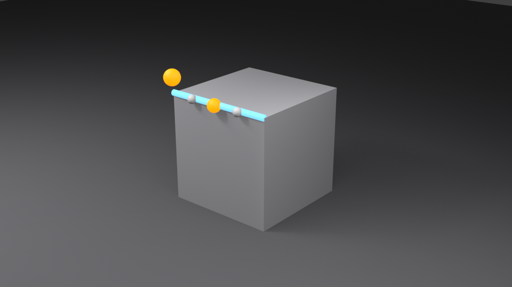
Face Snapping: Surface Placement
Face snapping is different—it projects your geometry onto surfaces, making it follow contours. This is perfect for placing objects on terrain, adding surface details, or creating draped geometry:
📝 Placing Objects on Surfaces
- Create a base surface:
- Add a plane:
Shift+A→ Mesh → Plane - Scale it up:
S,5,Enter - Enter Edit Mode, select all
- Subdivide a few times: Right-click → Subdivide (do this 3-4 times)
- Use Proportional Editing to create bumps:
G,Z, enable proportional editing (O)
- Add a plane:
- Add an object to place:
Shift+A→ Mesh → Cube - Enable Face snapping: Dropdown → "Face"
- Optional but recommended: Enable "Align Rotation to Target"
- Move the cube over the surface:
G - Watch it conform to the surface! It follows every bump and valley
🎯 Face Snapping + Rotation Alignment: When you enable "Align Rotation to Target," face snapping becomes incredibly powerful. Objects don't just sit on surfaces—they orient themselves to match the surface angle. A cube on a 45° slope will tilt 45° to match. This is how professionals place trees on hillsides, buildings on terrain, and details on curved surfaces!

Volume Snapping: Center Mass
Volume snapping is the least used but has its place. It snaps to the center of an object's volume (its "center of mass"):
🎯 When to Use Volume Snapping
- Quick centering: Align object centers without worrying about origins
- Balance points: Find where objects naturally balance
- Rough positioning: Fast placement when exact vertices aren't needed
In practice, most artists rarely use volume snapping—vertex and face snapping handle most needs more precisely.
The "Snap With" Setting
The "Snap With" dropdown controls what part of your selection does the snapping. This is subtle but powerful:
🎛️ Snap With Options Explained
| Option | Behavior | Example Use |
|---|---|---|
| Closest | Whatever part of your selection is nearest to target snaps first | Natural, intuitive snapping (default choice) |
| Center | Object origin/selection center snaps | Aligning object origins to specific points |
| Median | Mathematical center of selection snaps | Multi-vertex selections, centering groups |
| Active | Only the active element (highlighted differently) snaps | Precise control with complex selections |
📝 Testing "Snap With" Settings
- Create two cubes separated by some distance
- Enable Vertex snapping
- Enter Edit Mode on first cube
- Select multiple vertices (box select several)
- Set "Snap With" to "Closest"
- Move toward second cube: The closest vertex snaps first
- Undo, then set "Snap With" to "Median"
- Move again: The center of your selection snaps instead
- See the difference? Same target, different snapping behavior

Project Individual Elements
This checkbox changes how face snapping works with multiple selected elements:
🎯 Project Individual Elements Explained
When disabled (default):
- Selection moves as a group
- One reference point snaps, everything else follows
- Maintains relative positions
When enabled:
- Each vertex snaps independently to the nearest surface point
- Creates "draped" or "shrinkwrapped" effect
- Perfect for conforming flat geometry to curved surfaces
📝 Creating Draped Geometry
- Create an undulating surface (subdivided plane with bumps)
- Create a flat grid above it:
- Add plane:
Shift+A→ Mesh → Plane - Position above surface:
G,Z,2 - Enter Edit Mode, subdivide several times
- Add plane:
- Select all vertices of the flat plane
- Enable Face snapping + "Project Individual Elements"
- Move plane down toward surface:
G,Z - Watch magic happen! Each vertex independently snaps, creating perfect draping
💡 Pro Technique: This is how professionals create cloth draped over objects, roads following terrain contours, or decals that perfectly conform to curved surfaces. It's like vacuum-sealing geometry onto a surface!

Combining Snapping Types
You can change snap types mid-operation! This flexibility is incredibly powerful:
✅ Dynamic Snap Type Switching
- Start a move operation:
G - While moving, change snap type: Click dropdown and select different type
- Snapping behavior changes instantly!
- Or toggle snapping on/off: Press
Shift+Tabwhile moving
Example workflow:
- Start with Face snap to get object on surface
- Switch to Vertex snap to fine-tune exact position
- Disable snapping briefly to make tiny adjustment
- All in one smooth operation!
Vertex Snapping with Merge
When snapping vertices to connect geometry, you often want them to actually merge into one vertex. Here's how:
📝 Snap and Merge Workflow
- Use vertex snapping to position vertices exactly together
- After snapping, vertices are overlapping but still separate
- Select both overlapping vertices: Box select the area
- Merge them: Press
M→ "At Last" or "At Center" - Result: One vertex where two existed, perfect connection
Alternatively, you can enable automatic merging:
📝 Auto-Merge Vertices
- Top of screen, find the "Auto Merge Vertices" option
- Enable it (checkbox or toggle)
- Set a merge distance (very small, like 0.0001)
- Now snapping automatically merges overlapping vertices!
⚠️ Warning: Auto-merge can cause unexpected vertex merges if distance is too large. Use carefully!
Practical Vertex Snapping Scenarios
✅ Real-World Application: Building a Bridge
Scenario: Connect two cliff edges with a rope bridge
Workflow:
- Model one side of bridge with ropes hanging
- Enable Vertex snapping
- Select rope end vertices
- Snap them to vertices on opposite cliff
- Merge vertices to create permanent connection
- Bridge is perfectly anchored to both cliffs!
✅ Real-World Application: Adding Details to Existing Mesh
Scenario: Add a pipe connection to a mechanical part
Workflow:
- Model pipe separately
- Use Face snapping + Rotation Alignment to place pipe on surface
- Switch to Vertex snapping for fine adjustment
- Join objects:
Ctrl+J - Enter Edit Mode, select border vertices
- Bridge them: Face → Bridge Edge Loops
- Pipe is seamlessly integrated!
Common Vertex Snapping Issues
⚠️ Troubleshooting Vertex Snapping
Problem: Snapping doesn't seem to work
- You're too far away: Get closer—snap radius is smaller than you think
- Wrong snap type selected: Verify you have "Vertex" chosen
- Snapping is disabled: Check magnet icon is highlighted
Problem: Snaps to wrong vertex
- Multiple vertices nearby: Zoom in for better control
- Change "Snap With" setting: Try "Active" for precise control
- Hide unwanted geometry:
Hto hide distracting vertices
Problem: Face snapping too sensitive/not sensitive enough
- Objects at different scales: Apply scale with
Ctrl+A→ Scale - Camera angle matters: Rotate view for better snap behavior
- Target too complex: Temporarily simplify with subdivision levels
🔢 Exact Transformations with Numerical Input
Snapping is powerful, but sometimes you need exact control—moving something precisely 2.5 units, rotating exactly 45 degrees, or scaling to exactly 200%. That's where numerical input comes in. Instead of eyeballing or snapping, you type the exact value you want.
Understanding Numerical Input
Blender lets you type numbers during any transformation. It's like having a calculator built into your modeling tools:
💡 The Measurement Mindset: Think of numerical input as your digital tape measure and protractor. When a carpenter cuts a board, they don't eyeball "about 3 feet"—they measure exactly 36 inches. Numerical input gives you that same precision in 3D space.
Basic Numerical Input
The workflow is simple: start a transformation, type a number, press Enter. Let's try it:
📝 Moving with Exact Distance
- Select the default cube
- Press
Gto start moving - Type
2(you'll see it appear on screen) - Press
Enter - Result: Cube moves exactly 2 units in the direction of your mouse
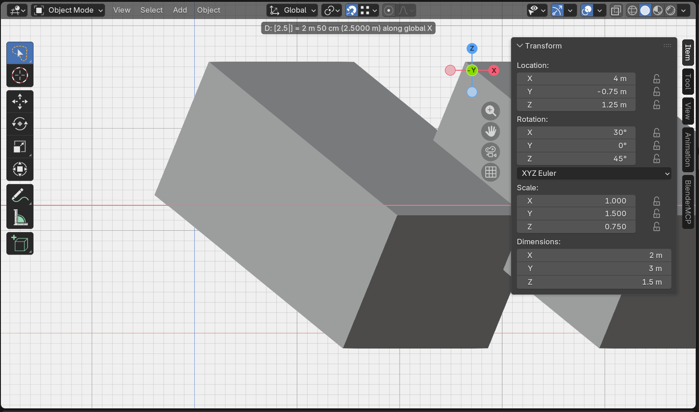
2.5 along global X reads as 2 m 50 cm. Press Enter to commit the typed value precisely.But that moved in a weird diagonal direction based on where your mouse was, right? That's rarely what you want. The real power comes from combining numerical input with axis locking:
📝 Moving Along a Specific Axis
- Press
Gto start moving - Press
X(locks to X-axis) - Type
3 - Press
Enter - Result: Cube moves exactly 3 units along the X-axis

X, Y, or Z during a move locks the cube to that single axis · the colored line traces the constrained path from the ghosted starting position. Combined with a typed distance, this gives exact, predictable movement every time.✅ The Complete Numerical Move Formula
G + [Axis] + [Number] + Enter
Examples:
GX5Enter→ Move 5 units along XGY-2.5Enter→ Move -2.5 units along Y (backward)GZ10Enter→ Move 10 units up
Pro tip: You can use negative numbers to move in the opposite direction!
Exact Rotation
Rotation works the same way. Instead of guessing angles, type them exactly:
📝 Rotating by Exact Degrees
- Select your object
- Press
Rto start rotating - Press
Z(rotate around Z-axis) - Type
45 - Press
Enter - Result: Object rotates exactly 45 degrees around Z-axis
🎯 Common Rotation Angles
| Angle | Use Case | Command |
|---|---|---|
| 90° | Perpendicular/right angles | R Z 90 |
| 45° | Diagonal orientations | R Z 45 |
| 180° | Complete flip/opposite direction | R Z 180 |
| 30° | Hexagonal patterns | R Z 30 |
| 22.5° | 16-sided patterns | R Z 22.5 |
🎯 Architectural Trick: Most architectural elements use 90°, 45°, or 30° angles. Memorize these commands:
RZ90becomes muscle memory. You'll use it constantly for aligning walls, windows, and structural elements.
R and an axis · 90° for perpendicular walls, 45° for diagonal bracing, 30° for hexagonal patterns, and 22.5° for 16-sided cylinders. Use R Z 360/n when you need an even division.Exact Scaling
Scaling with numerical input uses multipliers. Type 2 to double size, 0.5 to halve it:
📝 Scaling by Exact Factor
- Select your object
- Press
Sto start scaling - Type
2 - Press
Enter - Result: Object doubles in size (200% scale)
You can also scale along specific axes:
📝 Scaling Along One Axis
- Press
Sto start scaling - Press
Z(scale only on Z-axis) - Type
3 - Press
Enter - Result: Object becomes 3x taller, width unchanged
🎯 Useful Scale Values
| Value | Effect | Use Case |
|---|---|---|
| 2 | Double size | Making something twice as big |
| 0.5 | Half size | Making something half as big |
| -1 | Flip/mirror | Creating mirror images without modifier |
| 0 | Flatten completely | Collapsing geometry to a plane |
| 1.5 | 50% larger | Subtle size increases |
Mathematical Expressions
Here's where it gets really powerful: you can type math expressions, not just numbers! Blender calculates them for you:
📝 Using Math in Transformations
Addition/Subtraction:
GX3+2→ Moves 5 unitsGZ10-3.5→ Moves 6.5 units
Multiplication/Division:
S2*3→ Scales to 6x sizeS10/4→ Scales to 2.5x size
Complex expressions:
RZ360/8→ Rotates 45° (useful for circular patterns)GX(5+3)/2→ Moves 4 units
💡 The Circular Pattern Formula: When creating circular patterns, use
360/[number of copies]. Want 8 objects in a circle? Rotate by360/8= 45°. Want 12?360/12= 30°. Let Blender do the math!
G X 360/8 and Blender evaluates it on the spot — handy for dividing a circle into even parts.Unit Conversion
If you're working in metric but thinking in imperial (or vice versa), Blender can convert units on the fly:
📝 Converting Units in Real-Time
Examples (assuming metric scene):
GX3'→ Moves 3 feet (converts to meters)GZ6"→ Moves 6 inches (converts to meters)S2cm→ Scales to 2 centimeters
Note: This depends on your scene unit settings (covered in the Unit Systems section)
Relative vs Absolute Values
By default, numerical input moves/rotates/scales relative to current position. But you can also set absolute values:
🎯 Relative vs. Absolute Transformations
| Type | Syntax | Example | Result |
|---|---|---|---|
| Relative (default) | Just the number | G X 5 |
Moves 5 units from current position |
| Absolute | Number with equals sign | G X =5 |
Moves to X coordinate 5 (absolute position) |
📝 Using Absolute Positioning
- Select an object anywhere in the scene
- Press
GX - Type
=0(note the equals sign!) - Press
Enter - Result: Object moves to X=0, regardless of where it started
🎯 Centering Trick: Want to center an object on an axis? Use absolute positioning with 0:
GX=0centers on X-axis,GY=0centers on Y-axis. Much faster than manually positioning!
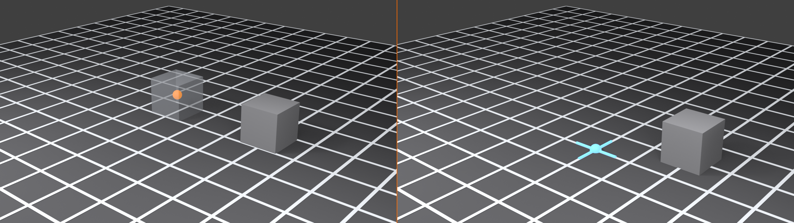
The Properties Panel Method
For ultimate precision, you can also edit transformation values directly in the Properties panel:
📝 Direct Property Editing
- Select your object
- Press
Nto open the Properties sidebar (if not visible) - Look at the "Transform" section
- You'll see Location, Rotation, Scale fields
- Click any field and type exact value
- Press Enter to confirm
🎯 When to Use Properties Panel vs. Hotkeys
| Method | Best For | Workflow |
|---|---|---|
| Hotkeys + Typing | Fast, in-the-flow adjustments | Modeling actively, quick changes |
| Properties Panel | Setting exact coordinates, reading current values | Precise setup, checking alignment |
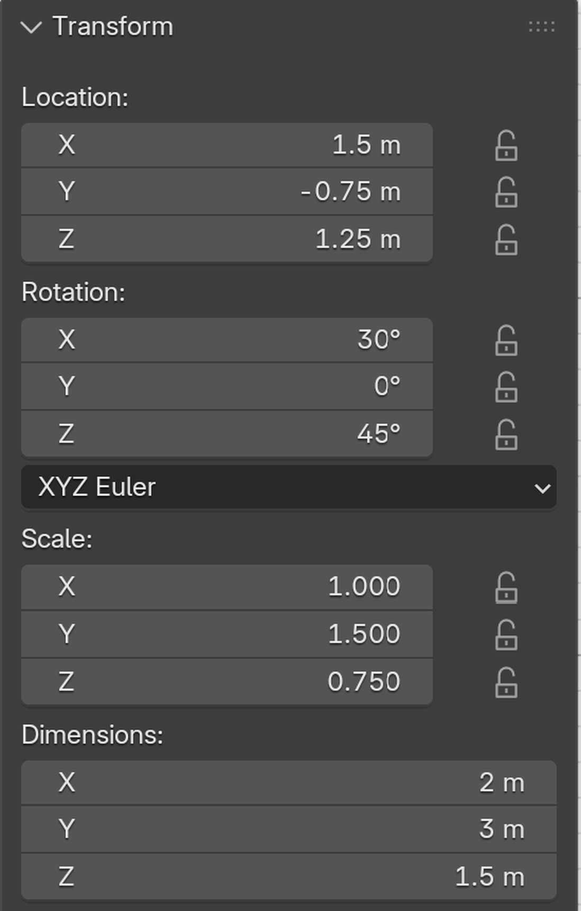
Advanced Numerical Techniques
✅ Pro Numerical Input Workflows
1. Creating Exact Copies at Intervals
- Duplicate object:
Shift+D - Lock to axis:
X - Type exact distance:
2 - Confirm:
Enter - Repeat:
Shift+R(repeats last operation)
2. Creating Radial Arrays
- Place cursor at rotation center:
Shift+S→ Cursor to Selected - Set pivot to cursor: Pivot menu → 3D Cursor
- Duplicate:
Shift+DEnter(duplicate in place) - Rotate around cursor:
RZ360/[count] - Repeat:
Shift+Rmultiple times
3. Precise Mirroring
- Duplicate:
Shift+D - Scale with negative value:
SX-1 - Perfect mirror without Mirror modifier!
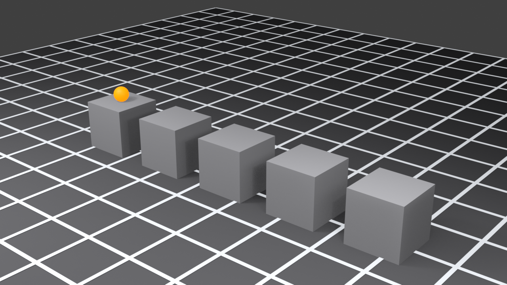
Numerical Input in Edit Mode
Everything we've discussed works in Edit Mode too, but it's even more powerful because you can transform individual vertices, edges, and faces with precision:
📝 Precise Vertex Positioning
- Enter Edit Mode:
Tab - Select vertices to move
- Use same commands:
GZ2Enter - Selected vertices move exactly 2 units up
Common Numerical Input Scenarios
✅ Scenario: Creating a Staircase
Goal: 10 steps, each 0.2 units high, 0.3 units deep
Workflow:
- Create first step (cube scaled appropriately)
- Duplicate:
Shift+D - Move up and back:
GZ0.2, thenGY0.3 - Repeat 9 times:
Shift+R,Shift+R,Shift+R... - Perfect staircase with exact proportions!
✅ Scenario: Positioning Windows
Goal: Place windows at exact heights and intervals on a wall
Workflow:
- Position first window:
GZ=1.5(1.5m from ground) - Duplicate:
Shift+DX2(2m spacing) - Repeat as needed:
Shift+R - All windows perfectly aligned and spaced!
Troubleshooting Numerical Input
⚠️ Common Numerical Input Issues
Problem: Numbers don't seem to do anything
- Cause: Haven't started a transformation yet
- Solution: Press
G,R, orSfirst, THEN type numbers
Problem: Object moves too far or too little
- Cause: Scale is not applied
- Solution: Apply scale:
Ctrl+A→ Scale
Problem: Can't see what I'm typing
- Cause: Values appear in header, easy to miss
- Solution: Look at the top-left corner of viewport for input display
Problem: Decimal point won't work
- Cause: Keyboard layout or numpad issue
- Solution: Try period (.) or comma (,) depending on your locale
📏 Measurement and Edge Length Tools
Sometimes you don't want to move or rotate—you just want to measure. How far apart are these two points? What's the length of this edge? Is this wall actually 3 meters or 3.2? Blender's measurement tools answer these questions instantly.
The Measure Tool
Blender has a dedicated measurement tool that works like a digital tape measure:
📝 Using the Measure Tool
- Activate the tool: Toolbar on left → Click "Measure" (ruler icon)
- Or use shortcut:
M(in some setups) - Click first point: Click anywhere in 3D space
- Click second point: A line appears with distance measurement
- The measurement stays visible until you create a new one or change tools
💡 The Tape Measure Analogy: Think of the Measure tool as a flexible tape measure that sticks where you place it. Click two points, and it shows you the exact distance between them. Perfect for checking if your doorway is actually 2 meters wide or verifying that spacing between columns is consistent.
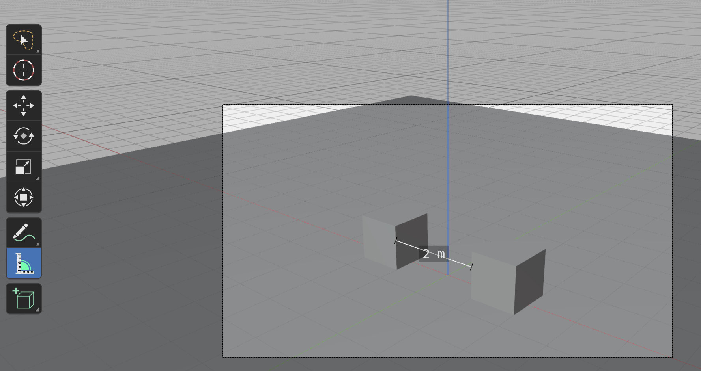
Measure Tool Features
The Measure tool is more sophisticated than it first appears:
🎯 Measure Tool Capabilities
- Multiple measurements: Create several measurement lines at once
- Snapping support: Enable snapping for precise endpoint placement
- Angle measurement: Add a third point to measure angles
- 3D distance: Shows straight-line distance through 3D space
- Visual feedback: Line color indicates measurement status
- Deletable: Select and delete (
X) measurements you don't need
📝 Measuring Angles
- Activate Measure tool
- Click first point (creates first endpoint)
- Click second point (creates vertex of angle)
- Click third point (creates second arm of angle)
- Angle measurement appears! Shows degrees between the two lines
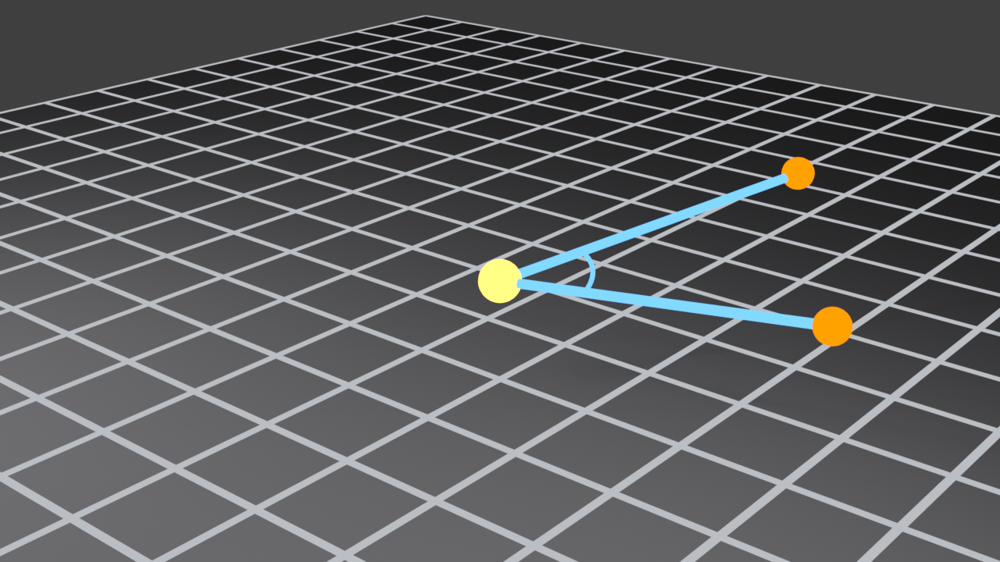
Edge Length Display
When modeling in Edit Mode, you can display edge lengths directly on your mesh:
📝 Enabling Edge Length Display
- Enter Edit Mode:
Tab - Open Overlay menu: Top-right of viewport (overlapping circles icon)
- Expand "Measurement" section
- Enable "Edge Length" checkbox
- All edge lengths now display on your mesh!
This is incredibly useful when you need all edges to be a specific length or when checking proportions:
✅ When to Use Edge Length Display
- Architectural modeling: Verify all window frames are 1.5m wide
- Hard surface modeling: Ensure consistent panel sizes
- Game assets: Check that all grid-snapped edges are correct length
- Quality control: Find edges that are slightly off from intended size
- Learning: Understand scale and proportions of your models
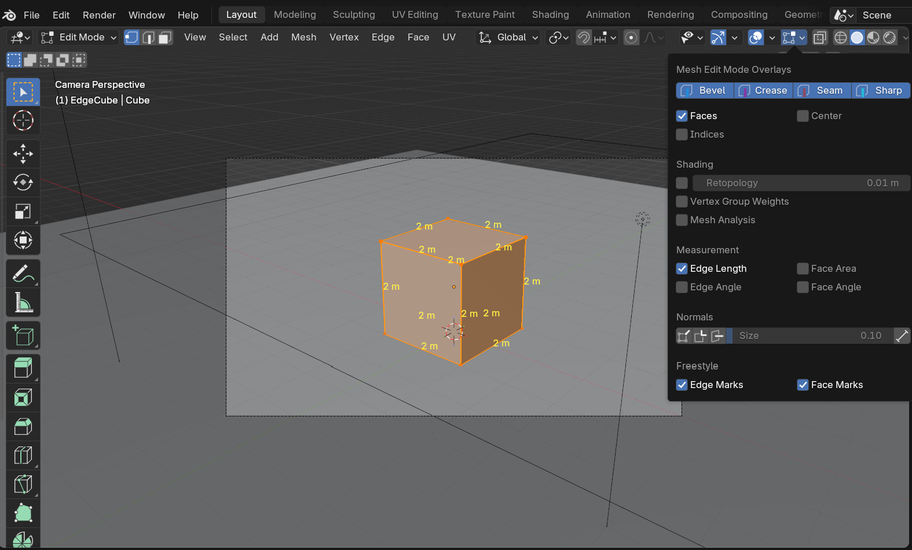
Additional Measurement Overlays
The Overlay menu has several other useful measurement options:
🎯 Useful Measurement Overlays
| Overlay | What It Shows | Best For |
|---|---|---|
| Edge Length | Length of each edge in scene units | Checking sizes, finding inconsistencies |
| Edge Angle | Angle between adjacent edges | Finding non-planar faces, checking angles |
| Face Area | Surface area of each face | UV mapping, material coverage calculations |
| Face Angle | Angle of face relative to view or world | Identifying surface orientation issues |
🎯 Pro Tip: Don't leave measurement overlays on all the time—they clutter the viewport. Enable them when you need to check something, then disable them. Think of them as diagnostic tools, not permanent displays.
The Statistics Panel
For overall model information, use the Statistics panel:
📝 Viewing Model Statistics
- Open Overlays menu (top-right)
- Enable "Statistics" checkbox
- Top-left corner shows mesh info:
- Vertex count
- Edge count
- Face count
- Triangle count
This is essential for game developers and performance-conscious modelers who need to hit specific polygon budgets.
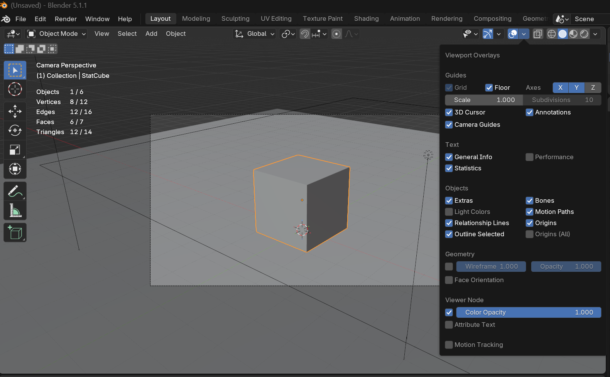
Manual Measurement Technique
You can also measure distances using the Properties panel:
📝 Measuring Distance Between Objects
- Select first object
- Press
Nto open Properties panel - Note its Location values (write them down or remember)
- Select second object
- Check its Location values
- Calculate difference: Subtract first from second for each axis
- Use Pythagorean theorem for 3D distance: √(x² + y² + z²)
That's tedious, right? That's why the Measure tool exists! But understanding this method helps you grasp how 3D coordinates work.
Using Edge Data in Edit Mode
In Edit Mode, you can see precise edge information in the Properties panel:
📝 Checking Individual Edge Length
- Enter Edit Mode:
Tab - Switch to Edge Select Mode:
2 - Select one edge
- Press
Nfor Properties panel - Look at "Edge Info" section
- Shows: Length, angle, and other edge properties
Setting Exact Edge Lengths
What if you want an edge to be exactly 2 units long? Here's the technique:
📝 Resizing Edges to Exact Length
- Select the edge in Edit Mode
- Check its current length (Properties panel or overlay)
- Calculate scale factor: Desired length ÷ Current length
- Scale the edge:
S, type the calculated factor,Enter - Example: Edge is 3 units, you want 2 units →
S2/3(Blender calculates!)
✅ Quick Edge Resize Formula
S + [Desired Length] / [Current Length] + Enter
Examples:
- Edge is 5 units, want 3 units →
S3/5Enter - Edge is 2.7 units, want 2 units →
S2/2.7Enter
Let Blender calculate the division—you don't need a calculator!
Measuring in Real-World Units
If you've set up your scene with real-world units (meters, feet, etc.), measurements will display in those units:
📝 Configuring Unit Display
- Open Scene Properties (in Properties panel, look for scene icon)
- Find "Units" section
- Set Unit System: Metric, Imperial, or None
- Set Length: Meters, Centimeters, Feet, Inches, etc.
- All measurements now display in your chosen units!
We'll cover this in more detail in the Unit Systems section, but knowing you can customize measurement display is crucial for professional work.
Practical Measurement Scenarios
✅ Scenario: Verifying Architectural Proportions
Goal: Ensure door is standard 2.1m height
Workflow:
- Enable Edge Length overlay
- Select door frame in Edit Mode
- Check vertical edge length
- If incorrect, calculate scale factor and resize
- All doors in building now accurate!
✅ Scenario: Checking Game Asset Dimensions
Goal: Verify modular tile is exactly 4x4 units
Workflow:
- Use Measure tool to check tile width and depth
- If measurements show 4.02 or 3.98, needs correction
- Use grid snapping to snap vertices to exact grid points
- Re-measure to confirm perfect 4x4 dimensions
Measurement Tool Limitations
⚠️ What Measurement Tools Can't Do
- Can't measure curved lengths: Only straight-line distances (use curve length calculations in Python for curves)
- Can't measure volumes: Use external tools or add-ons for volume calculations
- Can't export measurements: Measurements are visual only, not saved to files
- Limited precision: Display rounds to a few decimal places, though internal precision is higher
📐 Working with Real-World Units
By default, Blender works in generic "Blender units." A cube is "2 units" wide—but 2 what? Meters? Feet? Inches? For professional work, especially architectural visualization or product design, you need real-world units.
Understanding Blender's Unit System
Blender internally uses a unitless system. When you type "5," you're moving 5 generic units. But you can tell Blender to interpret those units as meters, feet, centimeters, etc.
💡 The Currency Analogy: Think of Blender units like a generic currency. You have "100 currency units"—but are those dollars, euros, or yen? The purchasing power changes dramatically depending on which one you choose. Similarly, "5 Blender units" could represent 5 meters (a car length) or 5 millimeters (a pencil eraser width). Setting the unit system tells Blender how to interpret those numbers.
Setting Up Unit System
📝 Configuring Scene Units
- Open Scene Properties: Properties panel → Scene icon (looks like a landscape)
- Find "Units" section
- Set "Unit System":
- None: Generic Blender units (default)
- Metric: Meters, centimeters, etc.
- Imperial: Feet, inches, etc.
- Set "Length": Choose specific unit (Meters, Feet, Centimeters, etc.)
- Adjust "Unit Scale": Usually leave at 1.0 (we'll cover this shortly)
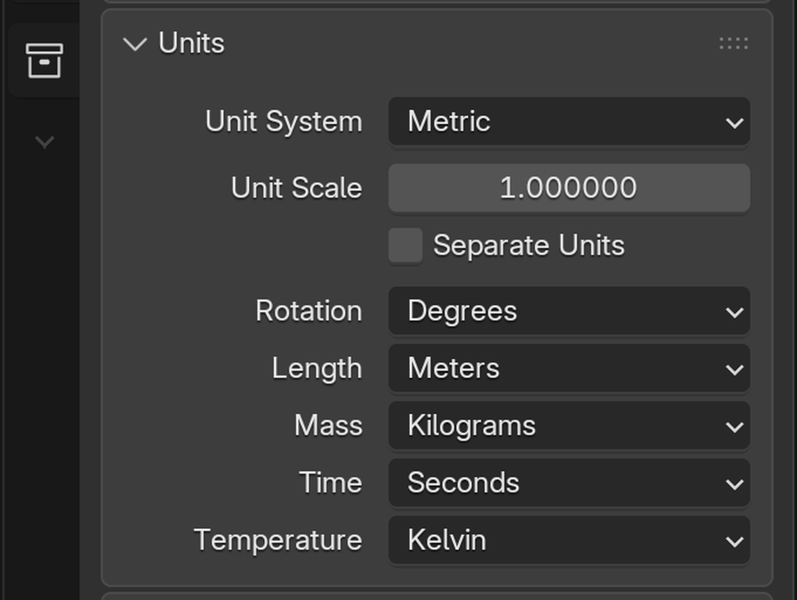
Metric vs. Imperial
🎯 Choosing Your Unit System
| Project Type | Recommended System | Typical Unit |
|---|---|---|
| Architecture (Most Countries) | Metric | Meters or Centimeters |
| Architecture (US/UK) | Imperial | Feet and Inches |
| Product Design | Metric | Centimeters or Millimeters |
| Mechanical Parts | Metric | Millimeters |
| Characters/Creatures | Metric | Meters or Centimeters |
| Game Assets | Metric (engine dependent) | Meters (Unity) or Centimeters (Unreal) |
The Unit Scale Setting
The "Unit Scale" setting is subtle but important. It's a multiplier that affects how Blender interprets units:
🎯 Understanding Unit Scale
- Scale = 1.0: 1 Blender unit = 1 of your chosen unit (default, most common)
- Scale = 0.01: 1 Blender unit = 0.01 meters (useful for centimeter-based work)
- Scale = 0.001: 1 Blender unit = 1 millimeter (for tiny precision parts)
In practice: Leave this at 1.0 unless you have a specific reason to change it. Most workflows don't need adjustment here.
⚠️ Unit Scale Confusion
Changing Unit Scale doesn't resize your existing models—it just changes how measurements are displayed. If you have a cube that's "2 units" wide and you change Unit Scale from 1.0 to 0.01, the cube doesn't change size—it now just displays as "200 units" (because 2 ÷ 0.01 = 200).
Best practice: Set your unit system at the start of a project and don't change it mid-project!
Modeling to Scale
Once you've set up units, model with real-world dimensions in mind:
📝 Real-World Dimension Reference
| Object | Typical Dimensions | Use For Reference |
|---|---|---|
| Door | 2m high × 0.9m wide | Room scale verification |
| Person (standing) | 1.7-1.8m tall | Scene scale reference |
| Table (dining) | 0.75m high × 1.5m long | Furniture proportion |
| Chair (seat height) | 0.45m from ground | Ergonomic reference |
| Car | 4-5m long × 1.8m wide | Vehicle scale |
| Credit Card | 8.5cm × 5.4cm | Small object scale |
Reference Cube Technique
Professional modelers often keep a "reference cube" in their scenes:
📝 Creating a Scale Reference
- Add a cube:
Shift+A→ Mesh → Cube - Scale it to human height:
SZ0.9(1.8m tall cube) - Place it on a separate layer or collection
- Name it "Reference_Human" or similar
- Keep it visible while modeling
- Hide it before final render
Why this works: Our brains understand human scale intuitively. A car next to a human-sized reference immediately "feels" right or wrong proportionally.
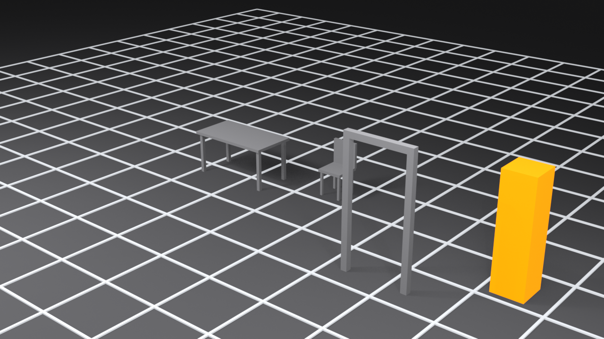
Importing Real-World Measurements
If you have blueprints or CAD drawings with real dimensions, you can match them exactly:
📝 Working from Blueprints
- Set your scene units to match the blueprint (usually meters or feet)
- Import or create a reference image: Add → Image → Reference
- Scale the reference image to match one known dimension
- Model directly over the reference
- Use numerical input to match blueprint measurements exactly
Exporting with Correct Scale
When exporting to other programs, unit settings matter:
🎯 Export Scale Considerations
| Target Software | Blender Unit Setup | Export Notes |
|---|---|---|
| Unity | Metric, Meters, Scale 1.0 | Unity expects 1 unit = 1 meter |
| Unreal Engine | Metric, Centimeters, or apply 100× scale on export | Unreal expects 1 unit = 1 centimeter |
| 3D Printing | Metric, Millimeters | STL files use millimeters by default |
| CAD Software | Match the CAD program's units | Check software documentation |
Common Unit System Issues
⚠️ Troubleshooting Unit Problems
Problem: Model is tiny/huge when exported
- Cause: Unit mismatch between Blender and target software
- Solution: Check target software's unit expectations, adjust export scale
Problem: Measurements show weird numbers
- Cause: Unit Scale setting is not 1.0
- Solution: Set Unit Scale to 1.0, or understand it's just display scaling
Problem: Camera feels wrong/objects too big or small
- Cause: Modeling at wrong scale for intended purpose
- Solution: Verify object sizes against real-world reference dimensions
Problem: Physics simulations behave strangely
- Cause: Incorrect scale affects gravity and physics
- Solution: Model at realistic scale (especially important for physics)
Professional Scale Workflow
✅ Scale Setup Checklist (Start of Every Project)
- ☐ Determine what real-world scale your project needs
- ☐ Set Scene Properties → Units to match (Metric/Imperial)
- ☐ Set Length to appropriate unit (Meters, Feet, Centimeters, etc.)
- ☐ Leave Unit Scale at 1.0 (unless you have specific reason)
- ☐ Create a reference object (human height cube or similar)
- ☐ Model your first object and verify its real-world size makes sense
- ☐ Document your unit setup in project notes
- ☐ Never change unit system mid-project!
🔄 Symmetry and Mirror Modeling
Symmetry is precision modeling's best friend. Most things in nature and design are symmetric—faces, bodies, vehicles, furniture, architecture. Mirror modeling lets you work on one side while the other side updates automatically, ensuring perfect symmetry without manual duplication.
Understanding Mirror Modeling
You already learned about the Mirror modifier in a previous lesson. But there's more to symmetry workflows than just adding a modifier. Professional modelers combine multiple techniques to maintain precision symmetry throughout the entire modeling process.
💡 The Sculptor's Approach: When a sculptor carves a face from stone, they work both sides simultaneously to maintain symmetry. In 3D modeling, we're smarter—we work one side and let the computer mirror it perfectly. It's like having an assistant who instantly copies every chisel mark to the other side with mathematical precision.
Mirror Modifier Review and Best Practices
You've used the Mirror modifier before, but let's review the precision-focused workflow:
📝 Setting Up Mirror Modeling
- Start with your object centered: Use
Shift+S→ Cursor to World Origin, then move object to cursor - Enter Edit Mode:
Tab - Delete half (or the appropriate portion):
- Press
Alt+Ato deselect all - Box select the right half:
B - Delete:
X→ Vertices
- Press
- Return to Object Mode:
Tab - Add Mirror modifier: Modifiers → Generate → Mirror
- CRITICAL: Enable Clipping (prevents gaps at center)
- Optional: Enable Merge (automatically merges center vertices)
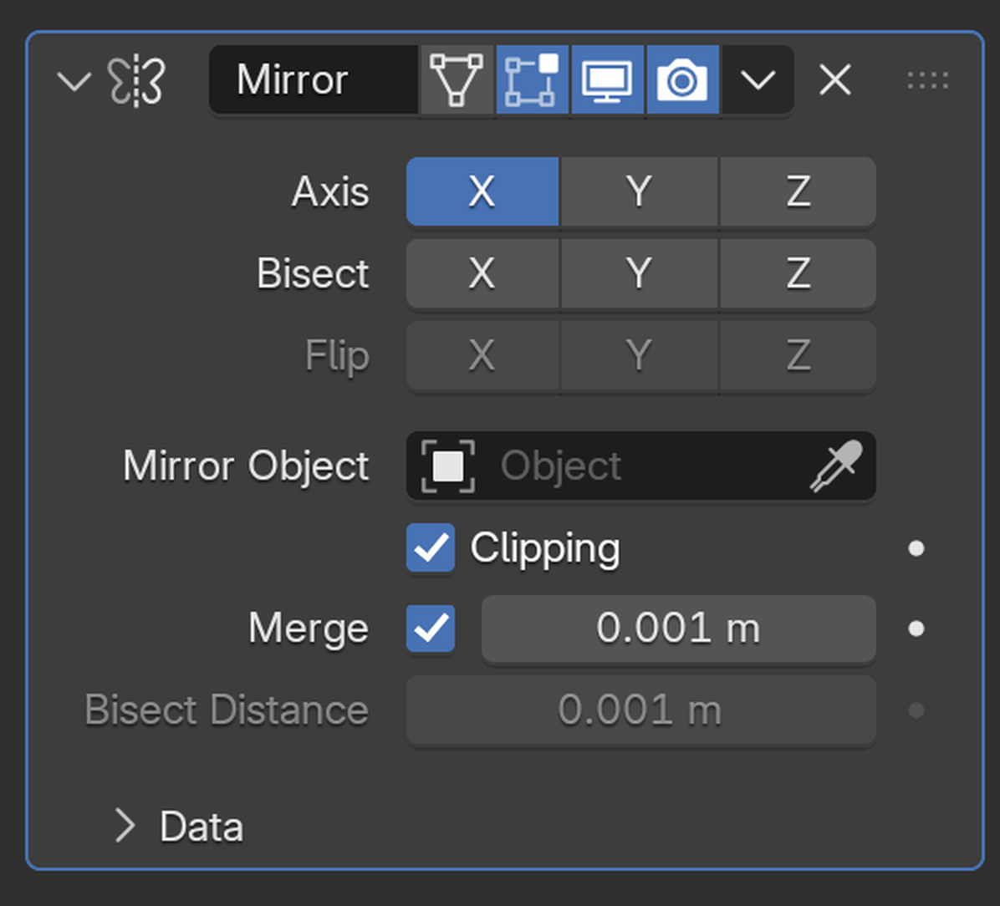
✅ Mirror Modifier Precision Checklist
- ☐ Clipping enabled: Prevents accidental gaps
- ☐ Merge enabled: Creates seamless connection
- ☐ Correct axis selected: Usually X for left/right symmetry
- ☐ Mirror Object set to None: Uses object's own origin (default)
- ☐ Bisect enabled if needed: Cuts away geometry crossing the mirror plane
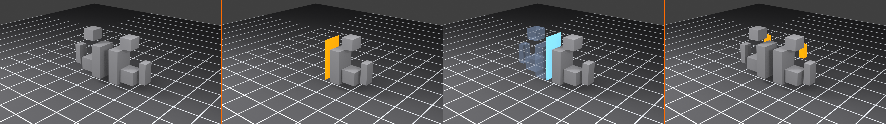
Working with the Center Seam
The center line where mirrored halves meet is critical for precision. Here's how to keep it perfect:
📝 Maintaining Center Seam Precision
- With Clipping enabled, vertices at center "stick" to the mirror plane
- Try to move a center vertex across the plane: It won't let you!
- This prevents gaps and overlaps automatically
- When modeling, vertices snap to X=0 (or Y=0, Z=0 depending on mirror axis)
If you find vertices slightly off the center line, fix them:
📝 Snapping Vertices to Mirror Plane
- Select the off-center vertices
- Scale them to zero on the mirror axis:
SX0(for X-axis mirror) - All selected vertices now sit exactly on the mirror plane
- Alternative: Use
Shift+S→ Selection to Grid with grid snapping enabled
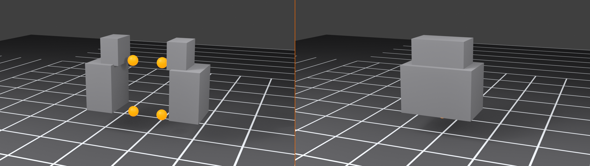
🎯 The S-X-0 Trick:
SX0is one of the most useful precision commands in Blender. It flattens all selected vertices to X=0, perfect for cleaning up center seams. Memorize this! Works for any axis:SY0orSZ0.
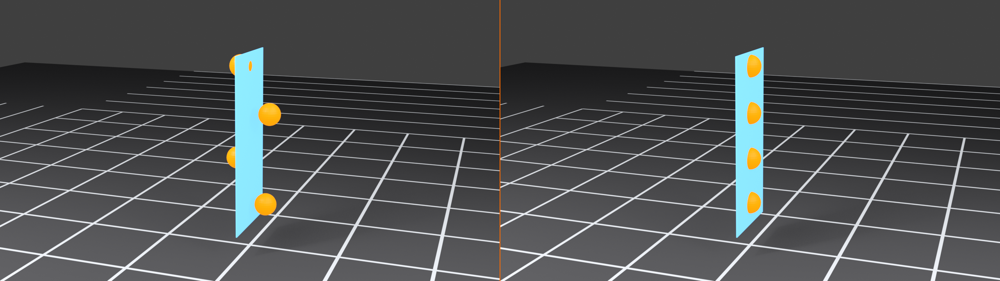
X-Mirror Option (Edit Mode)
There's another symmetry feature you should know about—the X-Mirror option in Edit Mode:
📝 Enabling X-Mirror
- Enter Edit Mode
- Look at the top of the viewport
- Find "Options" dropdown (or the Options menu)
- Enable "X-Mirror" checkbox
With X-Mirror enabled, when you select vertices on one side, corresponding vertices on the other side are automatically selected. This is incredibly useful for sculpting and weight painting, though less common in hard-surface modeling.
🎯 X-Mirror vs. Mirror Modifier
| Feature | Mirror Modifier | X-Mirror Option |
|---|---|---|
| When Active | Always (until applied) | Only in Edit Mode when enabled |
| Geometry | One side only, other is generated | Both sides exist, selection mirrors |
| Best For | Modeling, creating symmetry | Sculpting, weight painting, editing existing symmetric mesh |
| Performance | More efficient (half the geometry) | Full geometry always present |
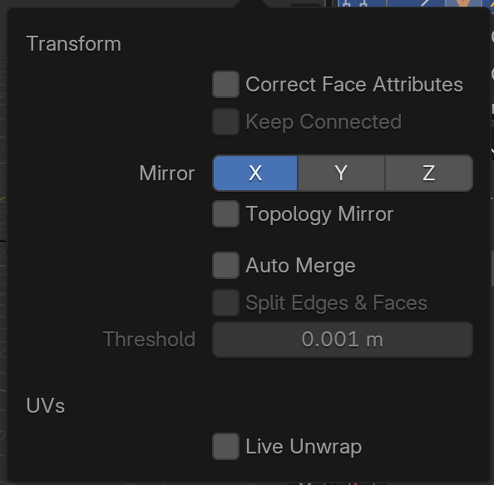
Symmetrize Operation
What if you already have a full model but one side is messy? Use the Symmetrize operation:
📝 Symmetrizing an Existing Mesh
- Enter Edit Mode
- Select all:
A - Right-click or use Mesh menu
- Choose "Symmetrize"
- Choose direction: -X to +X, +X to -X, etc.
- One side completely replaces the other!
This is a one-time operation (not a modifier), perfect for fixing asymmetric models or forcing symmetry on imported meshes.
⚠️ Symmetrize Warning
Symmetrize deletes half your model and mirrors the other half over it. Make sure you symmetrize in the correct direction! If you have detailed work on the left and symmetrize from right to left, you'll lose the left side's detail.
Safety: Duplicate your object first (Shift+D then hide it) as backup!
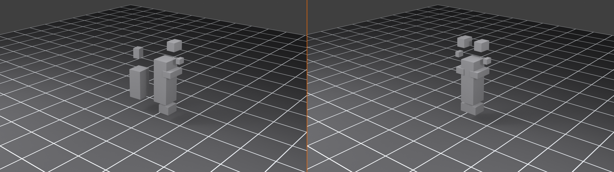
Multi-Axis Symmetry
Some objects are symmetric on multiple axes—think of a vase that's round (symmetric on X and Y):
📝 Setting Up Multi-Axis Mirrors
- Add Mirror modifier
- Enable X-axis
- Also enable Y-axis
- Model only one quarter—mirror creates all four!
This is incredibly powerful for radially symmetric objects:
🎯 Multi-Axis Symmetry Uses
- X + Y: Vases, bottles, wheels, circular designs
- X + Z: Front/back and left/right symmetry (rare but useful for specific props)
- X + Y + Z: Perfect spherical symmetry (model 1/8th, mirror creates whole)
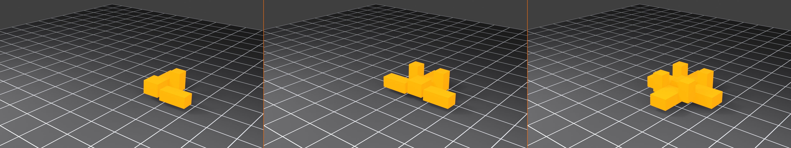
Maintaining Symmetry Without Modifiers
Sometimes you need to break symmetry for details but want to maintain it for the base form. Here's the workflow:
📝 Partial Symmetry Workflow
- Model symmetric base with Mirror modifier
- When base is done, duplicate object:
Shift+D - Hide duplicate (backup)
- Apply Mirror modifier on visible object: Modifier panel → Apply
- Now you have full geometry to add asymmetric details
- If you mess up, unhide backup and start from there
Origin Point Matters for Mirroring
The Mirror modifier uses your object's origin as the mirror center. Precise origin placement is crucial:
📝 Setting Perfect Mirror Origin
- Place 3D cursor at world center:
Shift+S→ Cursor to World Origin - In Object Mode, select your object
- Set origin to cursor: Object menu → Set Origin → Origin to 3D Cursor
- Or in Edit Mode, select center vertices:
- Then:
Shift+S→ Cursor to Selected - Exit Edit Mode, set origin to cursor as above

🎯 Professional Tip: For character modeling, always ensure the origin is at ground level between the feet and centered left/right. This makes rigging and animation much easier later. Set this at the very start of your project!
Checking Symmetry
How do you verify your model is truly symmetric? Here are some techniques:
📝 Visual Symmetry Verification
- Use orthographic views: Numpad
1(front),3(side),7(top) - Toggle X-Ray mode:
Alt+Z(see through model) - Enable Edit Mode overlays
- Look for asymmetric vertices that stand out
- Compare vertex positions in Properties panel (
Nkey)
📝 Numerical Symmetry Verification
- Enter Edit Mode
- Select a vertex on one side
- Check its X-coordinate in Properties panel (
N) - Select corresponding vertex on other side
- Its X-coordinate should be exact opposite (e.g., 2.5 vs. -2.5)
- Y and Z should be identical
Breaking Symmetry Intentionally
Sometimes you want asymmetry for realism—battle damage, wear patterns, organic irregularities:
✅ Controlled Asymmetry Workflow
- Model symmetric base with Mirror modifier
- Keep modifier active throughout base modeling
- When ready for details:
- Option A: Apply mirror, add asymmetric details
- Option B: Keep mirror active, add details as separate objects
- Asymmetric details make models feel more natural and lived-in
Common Mirror Modeling Issues
⚠️ Troubleshooting Mirror Problems
Problem: Gap visible at center seam
- Solution 1: Enable "Clipping" in Mirror modifier
- Solution 2: Select center vertices,
SX0to flatten to center - Solution 3: Enable "Merge" option in modifier
Problem: Mirror appears on wrong side
- Solution: Check object origin position—should be at center
- Or: Use "Flip" option in Mirror modifier
Problem: Mirror creates weird overlapping geometry
- Cause: Original geometry crosses the mirror plane
- Solution: Enable "Bisect" option to automatically cut away crossing geometry
Problem: Modifiers after Mirror don't look symmetric
- Cause: Modifier order matters!
- Solution: Mirror should usually be first in stack (top of modifier list)
Precision Symmetry Workflow Summary
✅ Professional Mirror Modeling Checklist
- ☐ Place 3D cursor at world origin (
Shift+S→ Cursor to World Origin) - ☐ Set object origin to cursor (Object → Set Origin → Origin to 3D Cursor)
- ☐ Delete appropriate half of mesh
- ☐ Add Mirror modifier
- ☐ Enable Clipping (prevents gaps)
- ☐ Enable Merge (seamless connection)
- ☐ Select correct mirror axis (usually X)
- ☐ Model on one side only
- ☐ Use
SX0to flatten vertices to center as needed - ☐ Keep Mirror active until absolutely need to apply
- ☐ Verify symmetry before applying
💼 Professional Precision Techniques
Now that you understand the individual precision tools, let's explore how professionals combine them into efficient workflows. These are the techniques that separate hobbyists from studio-ready modelers—the accumulated wisdom of years of production work.
The Precision Modeling Mindset
Professional precision modeling isn't about being obsessive or perfectionist. It's about building quality into your process from the start so you don't spend days fixing alignment issues later.
🎯 The Three Pillars of Precision Modeling
- Plan: Set up your scene (units, grid, reference) before modeling
- Prevent: Use tools that maintain precision automatically (snapping, modifiers)
- Verify: Check measurements and alignment regularly, not just at the end
Starting Every Project Right
The first 5 minutes of a project determine how smooth the next 5 hours will be. Here's the professional setup routine:
📝 Professional Project Setup Workflow
- Set Scene Units:
- Scene Properties → Units
- Choose Metric or Imperial based on project
- Set specific unit (Meters, Feet, Centimeters, etc.)
- Keep Unit Scale at 1.0
- Configure Grid:
- Overlay menu → Grid
- Set scale to match your working size
- Adjust subdivision if needed
- Enable Useful Overlays:
- Statistics (to track polygon count)
- Edge Length (when needed for verification)
- Create Reference Objects:
- Human-height cube for scale reference
- Reference images if working from blueprints
- Save as Template:
- File → Defaults → Save Startup File
- Or save as .blend template for specific project types
💡 The 5-Minute Investment: This setup feels like overhead, but it saves hours. Imagine building a house without leveling the foundation first—every wall would be slightly tilted, compounding errors throughout. Same principle applies to 3D modeling. Get your foundation right!
The Snapping Strategy
Knowing when to use which snap type is a learned skill. Here's the decision tree professionals use:
🎯 Snapping Decision Tree
| Situation | Snap Type | Why |
|---|---|---|
| Starting a modular asset project | Grid (Increment) | Everything aligns from the start |
| Connecting two separate meshes | Vertex → Edge → Merge | Precise point-to-point connection |
| Placing props on uneven terrain | Face + Align Rotation | Conforms to surface naturally |
| Creating edge subdivisions | Edge | Finds midpoint automatically |
| Organic modeling (characters) | Disable or toggle as needed | Freedom for artistic shaping |
| Hard surface details | Vertex or Grid | Crisp, aligned geometry |
✅ Snapping Best Practices
- Toggle frequently: Don't leave snapping on when you don't need it
- Use
Shift+Tab: Quick toggle becomes muscle memory - Switch types mid-operation: Start with Face snap, switch to Vertex for fine-tuning
- Combine with numerical input: Snap to get close, then type exact offset
- Enable temporarily: Hold
Ctrlduring transform to temporarily enable snapping
The Duplication Strategy
Creating precise copies is a core precision modeling skill. Here are the techniques pros use:
📝 Method 1: Numerical Duplication
- Select object
- Duplicate:
Shift+D - Lock to axis:
X,Y, orZ - Type exact distance:
2.5(example) - Confirm:
Enter - Repeat pattern:
Shift+R(repeats last operation perfectly)
Use for: Regular spacing (fence posts, windows, columns)
📝 Method 2: Array Modifier Duplication
- Model one perfect instance
- Add Array modifier
- Set Count to desired number
- Adjust Relative or Constant Offset
- Changes to original propagate to all copies!
Use for: When you might need to edit the base object (non-destructive)
📝 Method 3: Radial Duplication
- Place 3D cursor at rotation center:
Shift+S→ Cursor to Selected - Set pivot to 3D Cursor: Top center of viewport, pivot dropdown
- Duplicate in place:
Shift+DEnter - Rotate exact angle:
RZ360/[count]Enter - Repeat:
Shift+Rmultiple times
Use for: Circular patterns (petals, gears, columns around cylinder)
🎯 The Shift+R Secret:
Shift+Ris one of the most underused shortcuts. It repeats your last transformation exactly—same distance, same angle, same scale. For creating evenly spaced elements, it's invaluable. Duplicate once with precise values, thenShift+Ras many times as needed!
The Alignment Toolbox
Beyond snapping, Blender has alignment operators that professionals rely on:
📝 Align Objects to Active
- Select multiple objects (last selected is "active," highlighted differently)
- Object menu → Transform → Align Objects
- Choose alignment: X Min, X Max, X Center, Y Min, etc.
- All objects align to active object's position
This is incredibly useful for lining up UI elements, arranging props, or organizing scene elements:
✅ Alignment Examples
- X Center: Aligns all objects' centers along X-axis (like center-justified text)
- Z Min: Places all objects' bottoms at same height (objects sitting on same floor)
- X Min + X Max: First aligns left edges, then right edges (equal width)
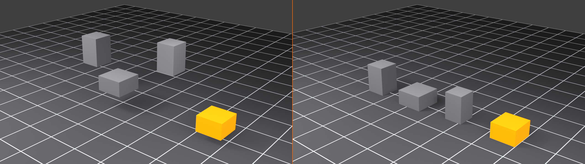
The Verification Routine
Professional modelers regularly verify precision throughout modeling, not just at the end:
📝 Periodic Verification Checklist
Every 15-30 minutes of modeling:
- ☐ Check edge lengths (enable Edge Length overlay briefly)
- ☐ Verify symmetry (toggle to orthographic views:
Numpad 1, 3, 7) - ☐ Test snapping (try moving objects to see if they snap correctly)
- ☐ Check scale (compare to reference object)
- ☐ Inspect center seams (for mirrored objects)
The Cleanup Phase
Before considering a model "done," professionals run through a cleanup checklist:
📝 Precision Cleanup Workflow
- Remove Doubles/Merge by Distance:
- Edit Mode → Select All (
A) - Mesh menu → Merge → By Distance
- Or press
M→ By Distance - Removes overlapping vertices within threshold
- Edit Mode → Select All (
- Recalculate Normals:
- Edit Mode → Select All
- Mesh menu → Normals → Recalculate Outside
- Or press
Shift+N - Ensures consistent face orientation
- Apply Scale:
- Object Mode → Select object
Ctrl+A→ Scale- Ensures modifiers and measurements work correctly
- Check for Non-Manifold Geometry:
- Edit Mode → Select menu → Select All by Trait → Non-Manifold
- Fix any selected problem areas
- Verify Final Dimensions:
- Use Measure tool to check critical measurements
- Compare to project requirements
💡 Apply Scale Early and Often: Unapplied scale causes countless mysterious problems—snapping doesn't work right, modifiers behave strangely, measurements are off. After any major scaling operation, immediately apply scale with
Ctrl+A→ Scale. Make it a reflex!


Keyboard Shortcuts for Precision
These shortcuts become essential muscle memory for precision modeling:
🎮 Essential Precision Shortcuts
| Shortcut | Function | Precision Use |
|---|---|---|
Shift+Tab |
Toggle snapping | Quick enable/disable during modeling |
Shift+S |
Snap menu | Instant positioning operations |
Ctrl+A |
Apply menu | Apply scale/rotation/location |
G/R/S + Axis + Number |
Exact transform | Numerical precision |
S X/Y/Z 0 |
Flatten on axis | Perfect alignment to plane |
Alt+G/R/S |
Clear transform | Reset to origin/default |
Shift+R |
Repeat last | Duplicate exact transformations |
Ctrl+M |
Mirror | Flip geometry precisely |
Numpad 1/3/7 |
Orthographic views | Check alignment from cardinal directions |

Working with Reference Images
For precision modeling from blueprints or concept art, reference images are essential:
📝 Setting Up Reference Images
- Add reference image:
Shift+A→ Image → Reference - Select your image file
- Position in viewport:
Gto move,Rto rotate - Scale to match one known dimension:
- If blueprint says door is 2m, create 2m cube next to reference
- Scale reference until door matches cube height
- Lock the reference image properties so you don't accidentally move it
- Set opacity: Image properties → Opacity (50-70% works well)
- Model directly over reference

The Modular Approach
Professional production modeling is almost always modular—building reusable pieces that snap together:
✅ Modular Modeling Principles
- Define your module size first: 2×2×2 units, 4×4 units, etc.
- All pieces align to this grid
- Use Grid snapping exclusively
- Test assembly early: Create 2-3 pieces, verify they connect
- Create variations: Base module + variations (corners, edges, centers)
- Name systematically: Wall_2x2_Center, Wall_2x2_Corner, etc.
Advanced Precision Techniques
🎯 Pro Technique: The Sacrifice Object
Problem: Need to align complex objects but snapping is awkward
Solution:
- Create a simple cube at the target location (sacrifice object)
- Position it exactly where you need alignment
- Select your complex object, then the cube (making cube active)
- Use Align Objects to align to cube
- Delete the cube—it served its purpose!
Why it works: Simple geometry is easier to position precisely than complex meshes

🎯 Pro Technique: The Origin Trick
Problem: Need to rotate object around specific point
Solution:
- Place 3D cursor at rotation point:
Shift+S→ Cursor to Selected (or specific location) - Set pivot point to 3D Cursor (top center dropdown)
- Rotate normally—it rotates around cursor instead of origin
- Or permanently move origin: Object → Set Origin → Origin to 3D Cursor
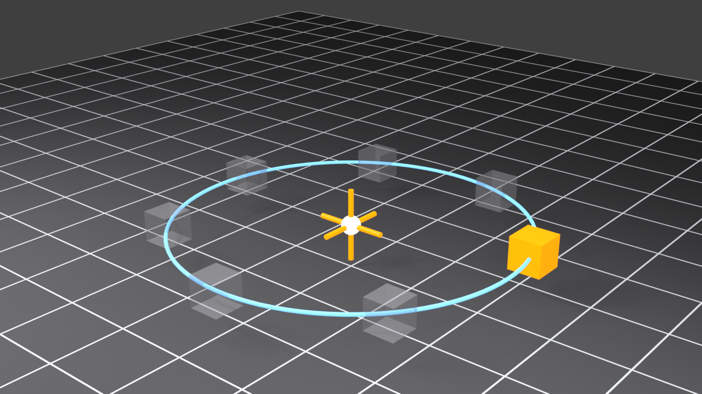
🎯 Pro Technique: Constraint-Based Positioning
Problem: Need object to always stay aligned with another object
Solution:
- Select object to constrain
- Object Constraints Properties (chain icon)
- Add Constraint → Copy Location (or Copy Rotation, Copy Scale)
- Select target object
- Constrained object now follows target precisely!
Use for: Accessories that must stay attached, mechanical parts that move together
Common Precision Mistakes
⚠️ Mistakes Even Experienced Modelers Make
1. Modeling without applying scale
- Symptom: Measurements seem wrong, snapping behaves oddly
- Fix:
Ctrl+A→ Scale after any major scaling
2. Not checking symmetry until the end
- Symptom: One side is slightly different, hard to fix
- Prevention: Verify symmetry regularly in orthographic views
3. Leaving snapping on when not needed
- Symptom: Organic shapes feel "stiff," vertices won't move smoothly
- Fix: Toggle snapping off (
Shift+Tab) for freeform work
4. Forgetting to merge overlapping vertices
- Symptom: Weird shading, holes in mesh, modifier problems
- Fix: Regularly use Merge by Distance (
M→ By Distance)
5. Not setting up units at project start
- Symptom: Everything is wrong scale, measurements meaningless
- Prevention: First 5 minutes of every project—set units!

🎯 Project: Precision Mechanical Part
Now it's time to put everything together! You're going to model a mechanical connector piece that requires every precision technique we've covered. This project simulates real-world production modeling where measurements matter and everything must fit together perfectly.
🎯 Project Goals
- Primary Goal: Model a mechanical connector with exact dimensions
- Precision Skills: Use grid snapping, numerical input, measurements, and mirror modeling
- Learning Goal: Develop precision modeling workflow from start to finish
- Real-World Application: Practice techniques used in product design and engineering
⏱️ Estimated Time: 45-60 minutes
📐 Difficulty: Intermediate
Project Overview: T-Connector Fitting
You'll create a T-shaped pipe connector—the kind used in plumbing, pneumatics, or mechanical systems. This seemingly simple object requires precision at every step:
📋 T-Connector Specifications
- Main body: Cylindrical, 3 units diameter × 2 units long
- Branch pipe: 2 units diameter × 2 units long, perpendicular to main body
- Connection flanges: 0.2 units thick, 0.3 units wide, at each opening
- Interior hollow: 2 units diameter through entire connector
- Beveled edges: 0.05 unit bevel on all exterior edges
- Symmetry: Mirror symmetry on two axes
💡 Why This Project? T-connectors teach you to handle multiple axes, precise alignments, symmetry, and boolean operations—all essential precision modeling skills. Plus, the techniques transfer directly to countless other projects from architecture to product design.
Phase 1: Project Setup
Before modeling a single vertex, set up your scene properly. This determines success or frustration:
📝 Step 1: Configure Scene Units
- Start fresh: File → New → General
- Delete default cube:
X→ Delete - Open Scene Properties (scene icon in properties panel)
- Set Units:
- Unit System: Metric
- Length: Centimeters (we'll work in centimeter scale)
- Unit Scale: 1.0
- Save immediately:
Ctrl+S→ "T_Connector_Project.blend"
📝 Step 2: Configure Grid and Snapping
- Open Overlay menu (top-right, overlapping circles icon)
- Under Grid section:
- Scale: 0.1 (for finer grid lines)
- Subdivision: 10
- Enable snapping:
Shift+Tab - Set snap type to Increment (Grid)
- Your workspace is now precision-ready!
📝 Step 3: Create Reference Cube
- Add cube:
Shift+A→ Mesh → Cube - Scale to 1 unit:
S0.5Enter(cube is 2 units by default) - Apply scale:
Ctrl+A→ Scale - Move to side:
GX-5Enter - Name it "Reference_1cm" in outliner
- This is your visual scale reference
Phase 2: Main Body Cylinder
Now we'll create the main horizontal pipe of the T-connector:
📝 Step 4: Create Base Cylinder
- Add cylinder:
Shift+A→ Mesh → Cylinder - In the add operator options (bottom-left):
- Vertices: 32 (smooth circular profile)
- Radius: 1.5 (3 units diameter)
- Depth: 2 units
- Apply scale immediately:
Ctrl+A→ Scale - Check dimensions in Properties panel (
Nkey):- Should show: X: 3cm, Y: 3cm, Z: 2cm
📝 Step 5: Add Connection Flanges
- Enter Edit Mode:
Tab - Switch to Face Select:
3 - Select both end faces (top and bottom circles)
- Extrude:
E0.2Enter(2mm flange thickness) - Scale outward:
S1.15Enter(15% larger) - Check result: You now have flanges on both ends!
![Eight-panel construction sequence for the T-connector, left to right. Panel one: a single orange main-body cylinder. Panel two: end flanges added to the cylinder, the new flange geometry orange. Panel three: a perpendicular branch cylinder added. Panel four: a cyan vertical mirror plane at X equals zero showing the mirror modifier. Panel five: a flange added to the branch. Panel six: orange boolean cutter cylinders positioned inside the body. Panel seven: a quarter cutaway revealing the hollow annular wall after the boolean difference. Panel eight: the finished part with beveled edges, the new bevel geometry orange.](images/lesson_09_48_t_connector_modeling_sequence.png)
Phase 3: Branch Pipe with Mirror Symmetry
The perpendicular branch is where precision and symmetry techniques come together:
📝 Step 6: Create Half of Branch Pipe
- Return to Object Mode:
Tab - Add another cylinder:
Shift+A→ Mesh → Cylinder - Set dimensions:
- Vertices: 32
- Radius: 1.0 (2 units diameter)
- Depth: 1.0 (we'll mirror this to make 2 units total)
- Rotate to vertical:
RX90Enter - Apply rotation:
Ctrl+A→ Rotation - Position at center top:
GZ0.5Enter
📝 Step 7: Add Mirror Modifier
- Ensure branch cylinder origin is at world center for Z-axis
- With branch selected, add Mirror modifier
- In modifier settings:
- Uncheck X-axis
- Check Z-axis (vertical mirror)
- Enable Clipping
- Enable Merge
- Branch now extends symmetrically up and down!
📝 Step 8: Add Branch Flanges
- Enter Edit Mode on branch
- Select top end face
- Extrude:
E0.2Enter - Scale:
S1.15Enter - Mirror automatically creates matching bottom flange!
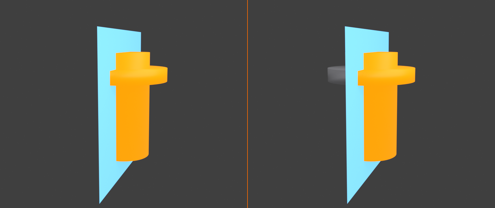
Phase 4: Creating Hollow Interior
Now we'll make the connector hollow using precise boolean operations:
📝 Step 9: Create Hollow Boolean Cutters
- Return to Object Mode
- Add cylinder for main body hollow:
Shift+A→ Mesh → Cylinder - Configure:
- Radius: 1.0 (2cm hollow)
- Depth: 3.0 (longer than main body to ensure clean cut)
- Name it "Cutter_Main"
- Add another cylinder for branch hollow:
- Radius: 1.0
- Depth: 3.0
- Rotate:
RX90Enter - Apply rotation:
Ctrl+A→ Rotation
- Name it "Cutter_Branch"
- Position both cutters at origin (they should already be there)
📝 Step 10: Apply Boolean Operations
- Select main body cylinder
- Add Boolean modifier
- Settings:
- Operation: Difference
- Object: Cutter_Main
- Solver: Exact (more reliable)
- Main body is now hollow!
- Repeat for branch:
- Select branch cylinder
- Add Boolean modifier
- Operation: Difference
- Object: Cutter_Branch
- Hide the cutter objects: Select them, press
H
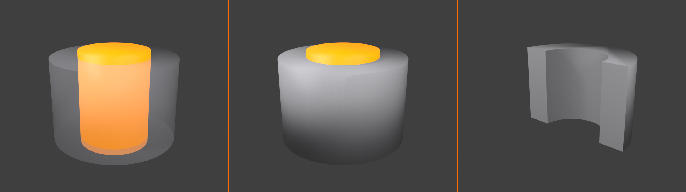
Phase 5: Joining and Refinement
Now we'll combine the parts and add finishing touches:
📝 Step 11: Join the Parts
- Select both visible cylinders (main body and branch)
- Join them:
Ctrl+J - Name the combined object "T_Connector"
- Enter Edit Mode and verify geometry looks correct
- Select all:
A - Remove doubles:
M→ By Distance - Recalculate normals:
Shift+N
📝 Step 12: Add Bevel for Realism
- Return to Object Mode
- Add Bevel modifier
- Settings:
- Amount: 0.05 (0.5mm bevel)
- Segments: 2
- Limit Method: Angle
- Angle: 30 degrees
- Edges are now realistically rounded!
📝 Step 13: Add Smooth Shading
- Right-click the T-connector
- Choose "Shade Smooth"
- Add Subdivision Surface modifier (optional):
- Levels Viewport: 1
- Render: 2
- Your connector now looks production-ready!
Phase 6: Verification and Quality Check
Professional work always includes thorough verification:
📝 Step 14: Measure and Verify
- Activate Measure tool: Toolbar → Measure
- Measure main body diameter:
- Click on one side of cylinder
- Click on opposite side
- Should read 3.0 cm
- Measure branch diameter: Should read 2.0 cm
- Measure flange thickness: Should read 0.2 cm
- Enable Edge Length overlay to spot-check dimensions
📝 Step 15: Visual Inspection
- Switch to orthographic views:
- Front:
Numpad 1 - Right:
Numpad 3 - Top:
Numpad 7
- Front:
- Check for symmetry in each view
- Look for any misalignments or gaps
- Enable X-Ray mode (
Alt+Z) to inspect interior
Success Checklist
✅ Your Project is Complete When:
- ☐ Main body is 3cm diameter × 2cm long
- ☐ Branch is 2cm diameter × 2cm total length (1cm each side of mirror)
- ☐ All flanges are 0.2cm thick and proportionally scaled
- ☐ Interior is hollow (2cm diameter throughout)
- ☐ Edges are beveled (0.05cm bevel visible)
- ☐ Smooth shading applied
- ☐ No gaps or overlapping geometry
- ☐ Measurements verified with Measure tool
- ☐ Symmetry confirmed in orthographic views
- ☐ All scale transformations applied
Bonus Challenges
Ready to take it further? Try these advanced variations:
🏆 Challenge 1: Add Bolt Holes
- Create small cylinders for bolt holes in each flange
- Position them precisely using numerical input
- Use Array modifier to duplicate around flange (6 bolts)
- Boolean subtract from connector
- Creates realistic mounting holes!
🏆 Challenge 2: Create Matching Parts
- Duplicate your T-connector
- Create straight pipe sections that fit exactly
- Use your connector's measurements for perfect fit
- Build a complete pipe assembly
- Everything should snap together with grid snapping!
🏆 Challenge 3: Add Thread Details
- Add subtle spiral thread grooves to interior
- Use Array modifier + Curve modifier for spiral
- Or add thread texture with displacement
- Creates realistic threaded connection!
Troubleshooting Common Issues
⚠️ If Something Goes Wrong
Boolean operation fails or looks weird:
- Ensure all scale is applied:
Ctrl+A→ Scale - Try "Exact" solver instead of "Fast"
- Make sure cutter objects are slightly larger than target
- Check normals: Select all,
Shift+N
Measurements don't match specifications:
- Check unit settings in Scene Properties
- Verify scale is applied on all objects
- Use Measure tool, not eyeballing
- Remember: Radius vs. Diameter (Radius = Diameter ÷ 2)
Mirror modifier creates gap or doesn't work:
- Ensure Clipping and Merge are enabled
- Check object origin is at correct position
- Flatten center vertices:
SZ0(for Z-axis mirror)
Parts don't join cleanly:
- Use Merge by Distance after joining:
M→ By Distance - Increase merge threshold if needed (but not too much!)
- Manually select and merge problem vertices
What You've Accomplished
Take a moment to appreciate what you've created! Starting from nothing, you've built a precision mechanical part using professional techniques:
- ✅ Set up proper units and measurement system
- ✅ Used grid snapping for consistent alignment
- ✅ Applied numerical input for exact dimensions
- ✅ Employed mirror modifier for perfect symmetry
- ✅ Used boolean operations for complex shapes
- ✅ Applied beveling for realistic edges
- ✅ Verified dimensions with measurement tools
- ✅ Created production-ready geometry
🎉 Congratulations! You've completed a project that demonstrates real-world precision modeling skills. The workflow you followed—setup, modeling with precision tools, verification—is exactly what professionals use daily. These techniques apply to everything from architectural visualization to product design to game asset creation.
![The finished hollow T-connector rendered as a product hero shot on a dark floor. The main cylindrical body stands upright with a flanged, open top revealing the hollow bore; a perpendicular branch with its own flange and open bore projects to the lower right. Green measurement annotations mark the main body diameter of 3 centimetres, the 2 centimetre hollow interior, the branch diameter of 2 centimetres, the 0.2 centimetre flange thickness, and the branch length of 2 centimetres, each with a verification checkmark.](images/lesson_09_51_final_t_connector_measurements.png)
💼 Real-World Application
The T-connector you just modeled is a real product design challenge. Engineering teams model these types of parts daily for:
- Manufacturing specifications
- 3D printing production files
- Assembly instructions and documentation
- Marketing and visualization
- Simulation and testing
You now have skills that translate directly to professional product design!
📝 Lesson Summary and Next Steps
You've just mastered one of the most important skill sets in professional 3D modeling—precision techniques. Let's review what you've learned and look ahead to how these skills will serve you in every future project.
What You've Mastered
🎓 Core Skills Acquired
- Snapping System: Grid, vertex, edge, face, and volume snapping for perfect alignment
- Numerical Input: Exact transformations using typed values and mathematical expressions
- Measurement Tools: Measuring distances, angles, and edge lengths accurately
- Unit Systems: Working with real-world dimensions (metric/imperial)
- Mirror Modeling: Creating perfect symmetry with professional workflows
- Professional Techniques: Setup routines, verification workflows, cleanup procedures
- Precision Projects: Applying all techniques to create production-ready models
The Precision Toolkit Summary
🔧 Your Precision Modeling Arsenal
| Tool | Primary Use | Shortcut/Access |
|---|---|---|
| Grid Snapping | Modular assets, regular spacing | Shift+Tab → Increment |
| Vertex Snapping | Connecting geometry point-to-point | Shift+Tab → Vertex |
| Edge Snapping | Creating subdivisions, intersections | Shift+Tab → Edge |
| Face Snapping | Surface placement, terrain conforming | Shift+Tab → Face |
| Snap Menu | Instant positioning operations | Shift+S |
| Numerical Input | Exact distances, angles, scales | G/R/S + number |
| Measure Tool | Checking distances and angles | Toolbar → Measure |
| Edge Length Display | Verifying edge dimensions | Overlay → Measurement |
| Mirror Modifier | Perfect symmetry modeling | Modifiers → Mirror |
| Flatten Command | Aligning to planes | S X/Y/Z 0 |
Key Concepts to Remember
✅ Core Precision Principles
- Set up before modeling: Units, grid, references—first 5 minutes determine next 5 hours
- Apply scale religiously:
Ctrl+A→ Scale after any scaling operation - Verify continuously: Check measurements throughout, not just at end
- Use snapping intelligently: Toggle on/off based on task, choose right snap type
- Think in real-world dimensions: 2 meters, 3 feet—not "about this big"
- Leverage symmetry: Mirror modifier saves time and ensures precision
- Clean up regularly: Merge by distance, recalculate normals, remove non-manifold
- Trust the tools: Snapping and numerical input are more accurate than eyeballing
When to Use Which Technique
🎯 Decision Matrix for Precision Modeling
| Project Type | Primary Techniques | Critical Settings |
|---|---|---|
| Architectural Visualization | Grid snapping, numerical input, real-world units | Metric/Imperial units, fine grid scale |
| Product Design | Numerical input, measurements, mirror modeling | Millimeters/centimeters, verification routine |
| Game Assets (Modular) | Grid snapping exclusively, power-of-2 dimensions | Grid scale matching module size |
| Hard Surface Modeling | Vertex/edge snapping, mirror, bevel precision | Subdivision + beveling workflow |
| Character Modeling | Mirror modeling, minimal snapping (organic) | Mirror on X-axis, clipping enabled |
| Mechanical Parts | All precision tools, boolean operations | Exact measurements, verification essential |
Common Precision Workflows
📋 Workflow Quick Reference
Workflow 1: Modular Asset Creation
- Set grid scale to module size (e.g., 2 units)
- Enable grid snapping permanently
- Model base piece aligned to grid
- Duplicate with
Shift+D+ numerical input - Test assembly early and often
Workflow 2: Symmetric Character/Prop
- Center object origin at world origin
- Delete half of mesh
- Add Mirror modifier (Clipping + Merge enabled)
- Model one side only
- Verify symmetry in orthographic views
- Apply mirror only when absolutely necessary
Workflow 3: Connecting Separate Meshes
- Enable vertex snapping
- Select vertices to connect
- Move (
G) close to target - Snap to exact position
- Merge overlapping vertices (
M→ By Distance) - Bridge edge loops if needed
Workflow 4: Blueprint-Based Modeling
- Set units to match blueprint
- Import reference image
- Scale reference using one known dimension
- Model over reference with numerical input
- Verify measurements match specifications
The Precision Checklist
Use this checklist for any precision-critical project:
✅ Professional Precision Checklist
Project Start (First 5 Minutes):
- ☐ Scene units configured (Metric/Imperial)
- ☐ Grid scale set appropriately
- ☐ Reference objects created
- ☐ Snapping configured for project type
- ☐ File saved with descriptive name
During Modeling (Regular Checks):
- ☐ Scale applied after transformations
- ☐ Measurements verified periodically
- ☐ Symmetry checked in orthographic views
- ☐ Snapping toggled appropriately for task
- ☐ File saved regularly
Project Completion (Final Quality Check):
- ☐ All dimensions verified with Measure tool
- ☐ Merge by distance applied
- ☐ Normals recalculated
- ☐ Non-manifold geometry resolved
- ☐ Scale applied on all objects
- ☐ Test assembly (for modular work)
- ☐ Visual inspection in orthographic views
- ☐ File saved with version number
Practice Recommendations
The best way to internalize precision modeling is through practice. Here are progressive exercises:
📚 Suggested Practice Projects
Beginner Practice (30-45 minutes each):
- LEGO brick: Precise studs, modular dimensions, grid snapping
- Door frame: Standard dimensions, rectangular precision, mirror symmetry
- Simple gear: Circular array, exact tooth spacing, center precision
- Table and chairs: Real-world dimensions, repeated elements, alignment
Intermediate Practice (1-2 hours each):
- Modular building kit: Walls, floors, corners that snap together
- Threaded bolt: Precise thread modeling, mirror symmetry, exact dimensions
- Window assembly: Frame, panes, handles—all exact measurements
- Mechanical claw: Multiple precise parts, pivot points, symmetry
Advanced Practice (2-4 hours each):
- Complete room interior: All furniture to scale, architecture accurate
- Engine block: Complex mechanical assembly, many precise parts
- Architectural facade: From blueprints, exact real-world dimensions
- Product packaging: Net template that folds correctly
Keyboard Shortcuts Quick Reference
⌨️ Essential Precision Shortcuts
| Shortcut | Function |
|---|---|
Shift+Tab |
Toggle snapping on/off |
Shift+S |
Open snap menu (cursor/selection operations) |
Ctrl+A |
Apply menu (scale/rotation/location) |
G/R/S + Axis + Number |
Exact transformation with numerical input |
S X/Y/Z 0 |
Flatten selection on specified axis |
Shift+R |
Repeat last transformation |
M → By Distance |
Merge overlapping vertices |
Shift+N |
Recalculate normals (Edit Mode) |
N |
Toggle Properties panel (view coordinates) |
Numpad 1/3/7 |
Orthographic views (front/side/top) |
Beyond This Lesson
Precision modeling is a foundational skill that opens doors to many specializations:
🚀 Career Paths Using Precision Modeling
- Architectural Visualization Artist: Creating accurate building models from blueprints
- Product Designer: Modeling items for manufacturing and 3D printing
- Hard Surface Modeler: Vehicles, robots, weapons for games and film
- Technical Artist: Creating game assets with exact specifications
- CAD/Engineering Visualization: Converting engineering drawings to 3D
- Environment Artist: Building modular asset kits for game levels
Coming Up Next
In the next lesson, you'll dive into Introduction to Shader Editor—learning how to create realistic materials and textures. The precision skills you've developed will help you apply materials with accuracy and control!
🔮 Lesson 10 Preview: Introduction to Shader Editor
You'll learn:
- Understanding Blender's shader system
- Creating basic materials (metal, plastic, glass)
- Working with nodes and node networks
- Applying textures precisely
- Physically-based rendering (PBR) principles
Final Thoughts
Precision modeling isn't about being obsessive or perfectionist—it's about working efficiently and professionally. When your models are built with precision from the start, they're easier to modify, more reliable with modifiers, and ready for any downstream use whether that's animation, game engines, 3D printing, or client presentation.
🎯 A Word from the Pros: In professional studios, precision isn't optional. Product designers work to millimeter tolerances. Architectural visualizers must match blueprints exactly. Game developers need modular assets that snap together perfectly. These aren't arbitrary standards—they're production requirements. You now have the skills to meet those requirements!
💡 The Precision Mindset
Remember these core principles as you move forward:
- Measure twice, model once: Setup saves time later
- Trust the tools: They're more accurate than your eye
- Verify continuously: Catch errors early, not at the end
- Build quality in: Precision from start = professional results
🎉 Congratulations!
You've completed Lesson 9: Precision Modeling Techniques!
You've learned professional-grade precision modeling workflows that will serve you throughout your entire 3D career. The snapping system, numerical input, measurement tools, and professional techniques you've mastered are used daily by industry artists worldwide.
From modular game assets to architectural visualization to product design—you now have the precision skills to do it all!